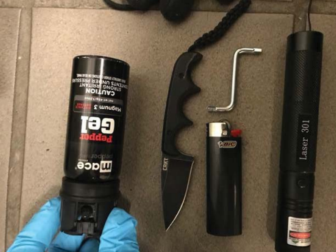

Background
5 members of the Proud Boys were charged with seditious conspiracy for their role in the January 6, 2021 attack on the US Capitol building. Prosecutors claimed that Enrique Tarrio, the leader and chairman of the Proud Boys at the time, conspired with Ethan Nordean, Joseph Biggs, Zachary Rehl, and Dominic Pezzola, to storm the US Capitol building for the purpose of overturning the 2020 election results, by riling up a large crowd of "normie" pro-Trump protesters and using them as a battering ram to breach police defensive lines and occupy the Capitol building. The defense acknowledged that some Proud Boys participated in the Capitol riot on January 6, but denied that the defendants actually planned in advance of January 6 to storm the Capitol, claiming instead that the Capitol riot was a spontaneous event.
The evidence presented by the prosecution to support the seditious conspiracy charges included video footage from January 6, but focused primarily around online activity (mostly Telegram and Parler posts) demonstrating that the Proud Boys made statements that could be interpreted as incriminating evidence of planning in advance to storm the Capitol. The prosecution filed an indictment against the 5 Proud Boy conspirators that listed incriminating Telegram and Parler messages in support of the seditious conspiracy charges. All of the defendants, except Dominic Pezzola, were found guilty of seditious conspiracy and sentenced to at least 15 years in prison. I review all of the incriminating Telegram and Parler evidence on a separate webpage.
I take the position that the seditious conspiracy charges were largely baseless, and all 5 defendants should have been acquitted of that charge due to reasonable doubt. There is no doubt that some Proud Boys participated in the Capitol riot on January 6 and even enthusiastically supported and praised the Jan 6 rioters. But the prosecution's evidence that the Proud Boys actually planned in advance to storm the Capitol is incredibly weak and unconvincing. Additionally, there is a large body of exculpatory evidence (evidence suggesting a not guilty verdict) found among the Telegram and Parler data in evidence. Here, I go over the most compelling examples of such exculpatory evidence. Most of the relevant evidence is available publicly. I have provided a convenient summary of the available sources of trial evidence, and I encourage readers to examine the raw trial evidence and reach their own conclusions.
Sources Of Evidence (so you can reach your own conclusion)
The trial evidence mostly centered around Telegram and Parler messages from the defendants, particularly the Telegram messages from private group chats affiliated with a chapter of the Proud Boys called “The Ministry of Self Defense” (MOSD). As an organization, the Proud Boys (Proud Boys International, L.L.C.) were divided into several autonomous regional chapters, loosely governed by Chairman Enrique Tarrio and a council of “Elders”. In December of 2020, Enrique Tarrio created “The Ministry of Self Defense” as a new, national-level chapter for organizing national events. The prosecution argued that Tarrio established the MOSD chapter specifically for the purpose of planning the January 6 insurrection. Therefore, the majority of the prosecution's evidence consisted of messages pulled from multiple private Telegram chat groups affiliated with the MOSD chapter of the Proud Boys.
Most of the relevant evidence is available publicly. Some of it can be found in the Government Exhibits filed electronically with PACER, which I have organized into separate PDF files for each Telegram group (linked below). The Telegram evidence from Government Exhibits usually consists of excerpts selected by the prosecution that omit most of the surrounding context. Fortunately, we also have a more complete record of some Telegram groups thanks to leaked documents (authenticated by the Seattle Times) containing Telegram chat history recovered by the FBI using forensic software called Cellebrite. Finally, I have also personally recovered a nearly complete chat history of one of the private MOSD chat groups (MOSD Ops) from Telegram directly.
Telegram Evidence from Government Exhibits:
MOSD Private Telegram Chat Groups:
MOSD ProspectsMOSD Leadership Chat
MOSD Main (for regular members and leadership)
MOSD Ops
MOSD Private Telegram Chat Groups created after Enrique Tarrio was arrested on January 4, 2021:
New MOSD (Replaced MOSD Leadership Chat)MOSD Main 2 (Replaced MOSD Main)
Boots on the Ground
MOSD Leaders (Post Jan 6 discussion)
Misc. Private Telegram Chat Groups involving the defendants:
Skull And BonesEast Coast Rally Command
Official Presidents Chat
Operation DC Street Sweepers
Florida Poor Boys State Chat
Croqueta Wars Chat
State Head Leadership Chat
Private DMs, Group Chats or Text Messages:
Enrique Tarrio Private DMs and Group ChatsZachary Rehl Private DMs and Group Chats
Leaked Telegram Chat Histories recovered by FBI using Cellebrite:
MOSD Main Full Chat History (12/27/2020 — 1/1/2021)
MOSD Ops Full Chat History (1/1/2021 — 1/4/2021)
MOSD Ops Full Chat History (1/1/2021 — 1/4/2021)
Telegram Chat Histories recovered from Telegram directly by author of this webpage:
Parler Evidence:
Archived Parler Data Sources:
Zenodo Parler Database (dataset of over 98 million Parler posts)DDO Secrets scraped Parler data
Reconstructed Parler Posting Histories:
Reconstructed Parler Posts from Enrique Tarrio (@NobleLead)Reconstructed Parler Posts from Ethan Nordean (@REBELRUFIO)
Reconstructed Parler Posts from Joseph Biggs (@JoeBiggs)
Reconstructed Parler Posts from @TheProudBoys
Video Evidence:
Key (How to Read this Webpage):
This webpage lists examples of exculpatory evidence (evidence suggesting a not guilty verdict) found within the collection of Telegram and Parler messages in evidence for the Proud Boys seditious conspiracy trial. The analysis is organized in a 3 column layout. The left-most column shows the date and time associated with each relevant piece of evidence. The middle column quotes the Telegram/Parler evidence verbatim, and links to the source of the evidence. The right column analyzes the quoted Telegram/Parler evidence and explains why it is exculpatory.
Highlights (if you don't wish to read this entire webpage):
The following is an abridged Table Of Contents linking to what I believe are the strongest examples of exculpatory evidence presented on this webpage. Click on a link to skip ahead to the relevant section.
- The true purpose of the MOSD chapter
- The actual plan for January 6th
- The MOSD Zoom briefing video
- The fear of getting stabbed
- The Proud Boys discuss hiding their beards
- The Proud Boys prepare for conflict with Antifa
- The official events of Jan 6
- The Proud Boys acknowledge how much they suck
- The Proud Boys' poor attempt at planning
- The MOSD leadership makes statements directly refuting the conspiracy case
Date |
Exculpatory Messages |
Assessment/Comments |
|
From Parler:
|
I include this Parler post from Proud Boy Chairman Enrique Tarrio as a counterexample to the various Parler posts quoted by the prosecution in the indictment as examples of the Proud Boys' violent or threatening rhetoric in reaction to Donald Trump's 2020 election loss. While the Proud Boys certainly embraced a culture of machismo that encouraged threats of (often vague or unspecified) violence, they also occasionally attempted to inspire by appealing to nobler sentiments like patriotism and humility. Additionally, this Parler post demonstrates that the Proud Boys (or at least Enrique Tarrio) did not necessarily conceive of “revolution” as entailing violence. | |
|
From MOSD (Leadership) Telegram Group (Govt Exhibit 501-2):
|
As an organization, the Proud Boys (Proud Boys International, L.L.C.)
are divided into several semi-autonomous regional chapters,
loosely governed by a Chairman and a council of “Elders”. On December 20th, 2020, Chairman Enrique Tarrio created a new
national-level chapter called “The Ministry of Self Defense” (MOSD), along with several private Telegram group chats
associated with the new chapter. Tarrio invited many high-ranking Proud Boys to join (herein referred to as the “MOSD Proud Boys”)
including Joe Biggs, Ethan Nordean, Zach Rehl, and John Charles Stewart (a.k.a. “Johnny Blackbeard”).
Initially, Enrique Tarrio provided a rather terse mission statement for the MOSD chapter: “to standardize event organizing”. Other MOSD Proud Boys ascribed similar purposes to the MOSD chapter, including “a structure to make events better” and “a professional business only chapter for organizing and running security for national events” (Govt Exhibit 513-1). In contrast, during the conspiracy trial, the prosecution claimed that the MOSD chapter was created for the specific purpose of planning an attack on the US Capitol to be carried out on January 6th, 2021. In the Telegram conversation quoted in the left column, John Charles Stewart (a.k.a. Johnny Blackbeard) asks Enrique Tarrio if the MOSD Proud Boys will be traveling to Washington DC as a group on January 6, 2021. Johnny Blackbeard alludes to something he expects to happen on January 6 that he calls “the after party”. The prosecution would probably interpret “the after party” as a veiled allusion to a secret plan to storm the Capitol. However, an “after party” generally describes a night-time event, and the history of Proud Boy rallies informs us that “the after party” almost certainly alludes to the anticipated late-night street fights with local anti-fascist counter-protesters (herein referred to using the umbrella term “Antifa”). The Proud Boys had good reasons to expect violent conflict with Antifa on January 6, because this is exactly what happened during the two previous “Million MAGA March” rallies in DC on November 14th and December 12th of 2020. Indeed, the Proud Boys regularly got into violent street fights with counter-protesters at political rallies throughout 2020, especially at night. Shortly before January 6, both the US Secret Service and the US Capitol Police released intelligence briefings that predicted there would be violent clashes between the Proud Boys and counter-protester groups in the streets of DC on January 6th, just as there was during earlier MAGA rallies in DC in November and December of 2020. The US Park Police released a similar intelligence briefing predicting street battles between the Proud Boys and Antifa in Washington DC on January 6, 2021, warning that “we should expect an event similar to those that occurred on 14 November 2020 and 12 December 2020 in Washington, DC” and that “we do anticipate street-level confrontation/violence between [the Proud Boys and counter-protesters]”. An earlier intelligence briefing from the US Park Police explicitly identified Antifa as the “main combatants with the Proud Boys” during the MAGA rally in D.C. on November 14, 2020, and correctly predicted that violent street fighting would break out during the December 12th rally, warning that the Proud Boys were likely to clash with a “radical group ... made up of individuals who self-identify with the Antifa identity”, and that “it is almost a certainty that violent confrontations will occur between members of opposing groups”. This prognosis is almost certainly what the Proud Boys themselves also believed would happen on January 6, which is why Johnny Blackbeard used the phrase “the after party” to describe the anticipated late night street fighting with Antifa as a distinct event that would occur after the day time “protest portion”. Previous MAGA rallies that the Proud Boys attended often involved a daytime “protest portion” consisting of relatively peaceful organized marches, speeches or demonstrations, followed by “the after party” at night, when the Proud Boys would clash violently with Antifa counter-protesters in the streets. Johnny Blackbeard's reference to an anticipated “after party” also highlights the fact that the Proud Boys were focused primarily on preparing for a rematch with Antifa on January 6, rather than some secret plot to storm the Capitol. This is consistent with a US Park Police intelligence briefing released prior to the December 12th MAGA rally in DC warning that “each side has been preparing for this "rematch"”. Thus, the fact that Johnny Blackbeard's conception of the upcoming Jan 6 rally entailed a “protest portion” followed by an “after party”, strongly suggests that at the time of these Telegram posts on December 20th, 2020, the MOSD Proud Boys had no knowledge whatsoever of any plan to storm the Capitol, and instead seemed to be operating under the assumption that the January 6 rally would play out similarly to previous D.C. MAGA rallies. Of course, the prosecution maintained that Enrique Tarrio created the “Ministry Of Self Defense” (MOSD) chapter for the specific purpose of planning the Jan 6 insurrection. But Enrique Tarrio's response to Johnny Blackbeard (quoted in the left column) where he said “... let’s get this shit started so we can get a test run in” is an important clue that helps us tease out the ACTUAL purpose of the MOSD chapter as well as Enrique Tarrio's TRUE plans for January 6th. While the initial “mission statement” for the MOSD chapter was pretty bare-bones, Enrique Tarrio did further elaborate on the purpose of the MOSD chapter. Tarrio explained that the MOSD was established to prevent aggressive or insubordinate behavior from “rank-and-file” Proud Boys at national events, and to make it easier for the Proud Boy leadership to control and direct large numbers of Proud Boys while marching in formation: On December 30th, 2020, Enrique Tarrio held a Zoom video conference and Q&A session lasting over an hour and thirty minutes (see full transcript) in order to discuss in detail the organizational structure and purpose of the newly established “Ministry Of Self Defense” (MOSD) chapter. Tarrio explained that the MOSD chapter had a stricter command structure intended to ensure that individual Proud Boys do not break formation or behave insubordinately during official marches. The MOSD chapter also instituted new rallying policies such as splitting up into smaller 10 man squads, forbidding official Proud Boy colors, disallowing intoxication or drug use, and acting defensively at all times (timestamps 7:53, 32:05, 33:25). These new policies were designed to address disciplinary issues that came up earlier on December 12th, 2020, during the second “Million MAGA March” rally in DC, when Enrique Tarrio lost control of a Proud Boy march (timestamps 7:39, 33:35, Govt Exhibits 514-34, 514-35) after multiple insubordinate Proud Boys broke formation and ran off to fight with nearby counter-protesters. Ultimately, four Proud Boys ended up getting stabbed. These disciplinary issues comprised a decent portion of the discussion during the MOSD Zoom call. Proud Boy Aaron Wolkind summarized the whole fiasco as follows: Enrique Tarrio elaborated further on this disorganization and identified the inability to maintain a single, cohesive marching formation during rallies as the most urgent problem: The new MOSD chapter was designed to address these disciplinary and organizational issues while also making it easier for leadership to control and direct large numbers of Proud Boys during public marches. This had proven very difficult to do at earlier rallies, and the reason for splitting up into ten man squads was, as MOSD leader Johnny Blackbeard explained, because “it's easier to herd ten cats than a hundred”. Enrique Tarrio also clearly explained the purpose of attending the January 6 rally in DC: he wanted to use the Jan 6 rally as an opportunity to field test the new MOSD command structure and rallying policies. For example, in the MOSD Main Telegram group chat, Tarrio stated “we are going to be using the 6th as a test” and explained that the MOSD chapter would be running “training exercises” during “the 5th at night and 6th throughout the day”. This is consistent with Tarrio's comments during the MOSD Zoom meeting (timestamp 17:31) elaborating on the new policy of splitting up into smaller 10-man squads and summarizing the actual plan for January 6th: “As of right now, the plans for the sixth is just to remain as a nucleus”. Essentially, Tarrio wanted to use the Jan 6 rally as an opportunity to test drive the new MOSD chapter by trying to navigate the streets of DC as a cohesive, disciplined, well-oiled infantry, subdivided into 10 man squads orbiting a single “nucleus”: Later on during the MOSD Zoom meeting, Enrique Tarrio further clarified what he meant by “remain as a nucleus”: When we synthesize Enrique Tarrio's statements about “remaining as a nucleus” and staying “as one fucking unit” with his other statements describing the agenda for January 6th “as a test” involving “training exercises”, Tarrio's TRUE plans for January 6th become pretty clear. Again, Tarrio basically wanted to use the January 6 rally to field test a march with the MOSD Proud Boys through the streets of DC. The objective was to divide the attending MOSD Proud Boys into ten-man squads while maintaining a single overall marching formation (“stay as one fucking unit” and “remain as a nucleus”). The stricter MOSD command structure and rallying policies (e.g. banning alcohol) were intended to help leadership coordinate the ten-man squads while maintaining a single overall formation like a well-disciplined and unified infantry. This is why when Johnny Blackbeard asked Enrique Tarrio if the Proud Boys would be attending the rally on January 6 “as a group”, Tarrio responded affirmatively, and then added “So let’s get this shit started so we can get a test run in”. Again, the Telegram evidence demonstrates pretty conclusively that Enrique Tarrio viewed January 6 primarily as an opportunity to field test the new MOSD command structure and rallying policies — to take the MOSD chapter for a spin in the streets of D.C. and find out if it works as anticipated. This is also consistent with Charles Donohoe's description of the plan for January 6th as “a simple and quick mission”. Furthermore, it's consistent with a Telegram voice message from the morning of January 6th itself, where MOSD leader Ethan Nordean can be heard giving orders to a group of Proud Boys, saying “Right side, right side slow down, left side speed up, right side slow down” as they marched through the streets of DC. Indeed, the MOSD chapter was not tied exclusively to the Jan 6 rally. It was intended to be deployed at all future rallies in Washington DC for years to come. Tarrio's long-term vision for the new MOSD chapter was that eventually it would enable Proud Boy leadership to control and direct one thousand or more Proud Boys in a public march while maintaining formation and ensuring discipline among the “rank and file”. Of course, none of this has anything to do with a secret seditious conspiracy to attack the Capitol. Throughout the entire hour and thirty-eight minute MOSD Zoom conference, wherein high-ranking MOSD leaders discuss plans for the new chapter in detail, there is not a single mention of anything remotely resembling a plan or conspiracy to storm the Capitol building. Furthermore, the prosecution's claim that the MOSD chapter was created specifically to plan an insurrection is refuted by the large body of Telegram evidence where the purpose of the MOSD chapter and the agenda for January 6th are clearly explained. The MOSD had absolutely nothing to do with some secret conspiracy to storm the Capitol. Finally, Enrique Tarrio had long-term plans and ambitions for the “Ministry Of Self Defense” chapter that went well beyond January 6th. He clearly exhibited a keen interest in slowly and painstakingly growing the MOSD chapter over time until it eventually becomes a well-disciplined infantry with one thousand or more members. This sort of sober, long-term planning and rational goal setting really doesn't leave much room for anything so acutely life-changing or disruptive as a secret plan to storm the US Capitol building on January 6th. It is very likely that no such secret plan ever actually existed. |
|
|
From MOSD (Leadership) Telegram Group (Govt Exhibit 501-4):
|
This is one of several Telegram conversations demonstrating that the Proud Boys were quite concerned
about the possibility of getting stabbed on January 6th, and clearly expressed an interest
in stab-proof personal protective gear, such as a "stab vest" or stab proof body armor or chest plating.
This particular conversation demonstrates that Joe Biggs and John Charles Stewart (Johnny Blackbeard),
both high-ranking MOSD leaders, were specifically concerned about the possibility of getting
stabbed on January 6th. This concern was a direct result of a disastrous incident (the “recent events” that Johnny Blackbeard mentioned) that occurred during
the previous
“Million MAGA March” rally in D.C. on December 12th, 2020, when
four Proud Boys were
stabbed (see CCTV footage and
video of the incident)
and subsequently hospitalized
following an
altercation with a counter-protester whom the Proud Boys
believed was affiliated
with a local Antifa group.

Thus, the Proud Boys were of course interested in taking precautions to prevent further stabbings from happening at the (then upcoming) rally on January 6th, 2021: The topic of stab proof protective gear came up over and over throughout the Telegram chats (see Govt Exhibits 501-4, 501-25, 507-3, and 501-45), especially in MOSD MAIN, where significant portions of entire conversations center around relatively expensive stab proof body armor. This suggests the Proud Boys had good reasons to fear getting stabbed on January 6. During the MOSD Zoom call, Zach Rehl (a.k.a. Captain Trump) lamented the high price of stab proof body armor, saying: The fact that many high-ranking MOSD leaders seemed to genuinely fear getting stabbed on January 6th strongly suggests they assumed further violent conflict with Antifa on January 6th was highly probable. If the Proud Boys were operating under the assumption that January 6th would play out similarly to previous MAGA rallies in D.C. (e.g. the “Million MAGA March” rallies on November 14th and December 12th of 2020), then of course the Proud Boys would have expected their primary antagonist on Jan 6 to be Antifa (or other counter-protester groups). Yet the prosecution repeatedly argued that the Proud Boys were not, in fact, worried about confronting Antifa on January 6th, but rather were primarily focused on attacking the D.C. police and storming the Capitol:
Sentencing memorandum reads:
To say that any of the MOSD Proud Boys were “not focused on Antifa” is a brazen lie that contradicts the
vast amount of Telegram evidence wherein the Proud Boys discussed
stab proof vests,
weapons to use against Antifa
such as strobe lights, laser pointers
and knives,
as well as disguises to blend in with Antifa
on January 6th. And on the morning of Jan 6 itself, shortly before the Capitol riot began, the Proud Boys
were marching around
the streets of D.C. while chanting “Fuck Antifa!” — a
popular Proud Boy chant heard at
many rallies.
The prosecution ignored all of that, and instead called attention to a few instances where
a Proud Boy expressed anti-police sentiment, such as the January 5th Telegram post from Aaron Wolkind saying that
“cops are the primary threat”.
But this single post from Aaron Wolkind — intended to address very
specific circumstances — is far outweighed
by other Telegram evidence, including
entire conversations,
spread across multiple days, where various MOSD Proud Boys (including upper-tier leaders like
Joe Biggs
and Enrique Tarrio)
make it absolutely clear that Antifa is the primary topic of conversation and source of concern
driving preparations for the January 6th rally.
As laid bare by the defendants’ own words before and on January 6, the defendants’
preparation for conflict was not focused on Antifa — it was the preparation for conflict with law
enforcement and government officials who they had declared traitors.
In particular, the prosecution failed to account for the fact that the Proud Boys repeatedly discussed stab proof body armor on Telegram in preparation for the Jan 6 rally. The D.C. police do not regularly use knives and generally don't stab people, so all those discussions about relatively expensive stab-proof body armor make little sense if the Proud Boys were primarily interested in attacking the cops. But Antifa does occasionally use knives, and multiple Proud Boys were stabbed during an altercation with a counter-protester (whom Proud Boy leadership believed was affiliated with Antifa) during the previous D.C. rally in December of 2020. Furthermore, Telegram posts from both Joe Biggs and Enrique Tarrio point out that the Proud Boys would need to hide their beards in order to successfully conceal their presence from Antifa on Jan 6: This makes it definitively clear that the Proud Boys' preparations in advance of January 6th — including the use of protective equipment and donning Antifa-style “black bloc” disguises — were primarily made specifically in anticipation of violent conflict with Antifa after dark, and had nothing to do with attacking cops or storming Capitols. Of course, while the Proud Boys were primarily concerned with Antifa on January 6th, they were also certainly quite wary of the D.C. police as well. Some Proud Boy leaders grew particularly distrustful of the cops in D.C. after the US Park Police (who were tasked with keeping the Proud Boys physically separated from counter-protester groups) actively obstructed the Proud Boys during the December 12th rally in order to prevent street fighting with counter-protesters. Nonetheless, the Telegram evidence (especially the conversations in MOSD Ops) makes it abundantly clear that the Proud Boys viewed Antifa (not the police) as their primary antagonist on January 6th, and prepared accordingly. Finally, it should be noted that the Proud Boys' expectation of Antifa-related violence was shared by Federal law enforcement and intelligence agencies. Indeed, a DHS/FBI intelligence briefing released two days before Jan 6 warned that “anarchist violent extremists likely will continue to pose a threat of violence — much of which will be non-lethal — against law enforcement, individuals, and institutions they view as symbols of authority, capitalism, and perceived oppression, particularly those believed to be racist or fascist.” Furthermore, a US Secret Service intelligence brief, a report from the US Park Police, and an intelligence brief released by the US Capitol Police, all predicted that there would be violent clashes between the Proud Boys and counter-protester groups in the streets of Washington D.C. on January 6th, just as there was during the previous two D.C. MAGA rallies in November and December of 2020. Thus, the Proud Boys' expectation of violent conflict with Antifa on Jan 6 was in fact shared by the Department of Homeland Security, the FBI, the Secret Service, the US Capitol Police, and the US Park Police, due to the violence observed during clashes with counter-protesters at earlier MAGA rallies throughout 2020. (The umbrella term “Antifa” overlaps with the DHS/FBI concept of “anarchist extremists”) A separate unclassified US Park Police intelligence briefing described Antifa as a “radical” subset of counter-protesters “where historically the most violent action originates”, and that Antifa-affiliated individuals “are believed to have been the main combatants with the Proud Boys during the 14 November demonstrations”. This is consistent with multiple other intelligence briefings and an academic study warning of political violence from “anarchist extremists” (Antifa) using “Black Bloc tactics”. Thus, the Proud Boys had every reason to expect more violent conflict with Antifa on January 6th, and most of the Proud Boys' preparations for the rally were made with this conflict in mind. |
|
|
From Skull And Bones Telegram Group (Govt Exhibit 500-69):
|
In this Telegram post, Proud Boy Chairman Enrique Tarrio explains the purpose of the newly established
Ministry of Self Defense (MOSD) chapter of the Proud Boys. The purpose of the MOSD was a hotly
contested topic throughout the conspiracy trial. The prosecution claimed that Enrique Tarrio created the
MOSD chapter for the specific purpose of planning to storm the Capitol on January 6th. However,
the actual Telegram and video evidence tells a completely different story. In the Telegram post quoted on the left, Enrique Tarrio announced
the newly established MOSD chapter in a private Telegram chat group for Proud Boy “elders”. Tarrio explained that
the purpose of the MOSD was to “discourage and remove new fags and aggressive members
from attending national events”. (The phrase “new fags” is not a slur, but rather a term carried over from
4chan jargon meaning an inexperienced individual who is new to the sub-culture.) Tarrio justified the creation of the MOSD chapter
as the “best compromise we can come up with to hold unruly members accountable at [national] events”.
Tarrio's claim is consistent with other instances when Proud Boy leaders explained the purpose of the MOSD chapter, such as Charles Donohoe's comments during the December 30th MOSD Zoom call (see transcript) spelling out a concise “mission statement” for the MOSD chapter: This mission statement is consistent with Charles Donohoe's Telegram post in a private chat group for prospective MOSD members (Govt Exhibit 513-1), where Donohoe described the MOSD chapter as “a professional business only chapter for organizing and running security for national events”. The mission statement is also consistent with Aaron Wolkind's description of the MOSD chapter as a “leadership structure and chain of command” intended to “make events better”: Moreover, during the Zoom call (see transcript) Enrique Tarrio further elaborated on the purpose of MOSD, explaining that the MOSD chapter was established as “a way to do rallies better”. Tarrio believed the MOSD chapter was necessary after an earlier MAGA rally in D.C. (the second “Million MAGA March” rally on December 12th, 2020) proved to be somewhat disastrous. Four Proud Boys, including Jeremy Bertino, were stabbed and subsequently hospitalized following an altercation with a counter-protester. Enrique Tarrio blamed this disaster on a breakdown of discipline and a failure to follow orders among the “rank-and-file” Proud Boys who attended the December 12th rally. Tarrio feared that such disciplinary problems would ultimately result in a major PR disaster that could “bury the entire club if one huge incident happens”: The new MOSD chapter instituted stricter rules and rallying policies intended to improve discipline and make it easier for leadership to march large numbers of Proud Boys while maintaining formation, like a well-organized professional infantry. (See also the above analysis of the MOSD chapter.) These new policies included stricter OPSEC protocols and a ban on getting drunk during rallies: Thus, multiple high-ranking Proud Boy leaders clearly spelled out — on multiple occasions — the exact purpose of the MOSD chapter: to provide a stricter command structure that includes new policies designed to enhance discipline and improve the way rallies are conducted. The Proud Boys clearly spelled this out in private chat groups and meetings which they believed to be secure, yet at no point did any Proud Boy ever claim (either on Telegram or during the Zoom meeting) that the MOSD chapter had anything at all to do with some secret conspiracy to storm the Capitol on January 6th. Regardless, the prosecution repeatedly claimed (without any supporting evidence) that the MOSD chapter was established specifically for the express purpose of planning to storm the Capitol building on Jan 6. And yet throughout the entire MOSD Zoom meeting on December 30th, 2020, which lasted over an hour and a half, there was not a single statement uttered that even remotely hinted at the existence of some secret plan to storm the Capitol. Moreover, Enrique Tarrio elaborated at length on the actual motivation that drove the creation of the MOSD chapter. It had nothing to do with any secret conspiracy and everything to do with Tarrio's frustrations over disciplinary problems with “rank-and-file” Proud Boys at national rallies. Tarrio was specifically frustrated over the major difficulty he experienced at previous rallies trying to maintain formation while marching large numbers of Proud Boys through the streets. Tarrio lamented that individual Proud Boys had the tendency to break formation during marches in order to run off and start unnecessary fights with nearby counter-protesters: This is consistent with Enrique Tarrio's insistence that “self defense” was the core theme and central philosophy of the “Ministry of Self Defense”. The MOSD chapter was meant to establish a culture of self defense and discourage individual Proud Boys from acting aggressively or breaking formation during rallies to run off and start fights with nearby counter-protesters: This is also consistent with an earlier Telegram post from Enrique Tarrio in a private group chat for Proud Boy regional leaders, where Tarrio lamented the difficulty of enforcing discipline and maintaining formation while marching with hundreds of individual Proud Boys at rallies, likening the experience to herding cats: Tarrio's use of the phrase “herd[ing] cats” was later echoed by MOSD leader John Charles Stewart (a.k.a. Johnny Blackbeard) during the December 30, 2020 MOSD Zoom meeting. Johnny Blackbeard justified the new MOSD policy of splitting the Proud Boys into smaller ten-man squads by saying: All of this is also entirely consistent with comments made by other MOSD Proud Boys on Telegram, complaining about the breakdown of discipline during the December 12th, 2020, rally in DC. For example: Thus, the evidence clearly establishes that Enrique Tarrio established the MOSD chapter in order to improve discipline during rallies by establishing a stricter command structure and instituting new rallying policies like the ban on intoxication during marches and splitting up into smaller ten-man squads to make marches more manageable for leadership. None of this is particularly compatible with the prosecution's claim that the MOSD chapter was actually created for the express purpose of planning a secret seditious conspiracy to storm the US Capitol building on January 6th. Finally, Tarrio's long-term vision for the new MOSD chapter was that eventually it would enable leadership to control and direct thousands of Proud Boys in a public march while maintaining formation and ensuring discipline among the “rank and file”: Tarrio clearly exhibited a keen interest in slowly and painstakingly growing the Ministry Of Self Defense chapter over time until it eventually becomes a well-disciplined, marching infantry with thousands of members. This sort of long-term planning and goal setting really doesn't leave much room for some crazy secret conspiracy to storm the Capitol building on January 6th. |
|
|
From MOSD Prospects Telegram Group (Govt Exhibit 513-1):
|
In these Telegram posts, Proud Boy leaders Jeremy Bertino (Noble Beard The Immortal) and Charles Donohoe (YutYut Cowabunga)
announce the new “Ministry of Self Defense” (MOSD) chapter in a private chat group for prospective MOSD members.
The purpose of the MOSD chapter
was a hotly contested topic during the conspiracy trial. The prosecution argued that the MOSD chapter was specifically
created for the express purpose of planning to storm the US Capitol building on January 6th. However, the evidence from
Telegram chats and the MOSD Zoom meeting on December 30th, 2020
paint a completely different picture. This evidence clearly establishes
that Enrique Tarrio established the MOSD chapter to
address disciplinary issues that cropped up among the “rank-and-file” Proud Boys during the previous MAGA
rally in D.C. on December 12th, 2020. (See the MOSD Zoom call video or
transcript
at timestamps 7:18,
33:35 and 36:01)
The Telegram posts quoted in the left column further establish the actual purpose of the MOSD chapter as a “business only chapter for organizing and running security for national events”. This description is consistent with several other statements made by Proud Boy leaders on Telegram and Zoom. Additionally, the Telegram post from Jeremy Bertino quoted in the left column includes a link to the MOSD Application Form. The form included various affirmations with corresponding check-boxes that applicants had to click in order to express agreement, such as “I will always act in self defense and I will never initiate a confrontation”. (This affirmation seems particularly counter-productive if your goal is to storm the US Capitol building, but it perfectly aligns with Enrique Tarrio's frustration over “rank-and-file” Proud Boys who break formation during marches and run off without permission to fight random counter-protesters.) The various affirmations included in the application form reflect the true purpose of the MOSD chapter as a more formal command structure with stricter rallying and disciplinary policies, like the ban on getting drunk during official Proud Boy events. Finally, the prosecution repeatedly brought up various statements from MOSD Proud Boys that emphasized the importance of secrecy and strict operations security (OPSEC), such as the MOSD policy forbidding the sharing of any screenshots of MOSD-related Telegram chat groups. (See Charles Donohoe's comments during the 12/30/2020 MOSD Zoom call at timestamp 5:05.) The prosecution framed this as suspicious and incriminating behavior, implying the Proud Boys were concerned about secrecy and security primarily because they were secretly making plans to storm the US Capitol building on January 6th. Yet throughout the entire MOSD Zoom meeting on December 30th, 2020, which lasted over an hour and a half (see the full transcript), none of the MOSD Proud Boys uttered a single statement that even remotely hinted at the existence of some secret plan to storm the Capitol. Moreover, the reason for enforcing strict OPSEC practices was most likely to prevent sensitive information about Proud Boy activity from leaking out to the Proud Boys' political enemies, like the “anti-fascist” counter-protesters who had historically showed up at rallies attended by the Proud Boys and often monitored Proud Boy activity online. Additionally, the Proud Boys occassionally discussed on Telegram certain highly illegal (but non-Capitol-storming-related) activities, such as violent street fighting with counter-protesters or illegally bringing a concealed knife to Washington DC. The Proud Boys also clearly and unambiguously announced on Telegram that they were currently storming the Capitol after the riot began in the early afternoon of January 6th, so clearly they felt comfortable admitting to illegal activities on Telegram, at least until after January 6th when they had reason to believe their group chats were compromised by law enforcement (Govt Exhibit 509-41). Yet there is no Telegram evidence from before January 6 that clearly supports the existence of a plan or conspiracy to storm the Capitol. |
|
|
From MOSD MAIN Telegram Group:
|
This exchange on Telegram took place in the MOSD MAIN
chat group shortly after it was initially created on December 27th, 2020. These Telegram posts are further evidence demonstrating the immediate concern the Proud Boys
had about getting stabbed in D.C. on January 6th. These posts constitute one of several Telegram conversations wherein the Proud Boys discussed
wearing stab-proof protective equipment in D.C. on January 6th. This fear of getting stabbed was a direct response to the events
of the
previous MAGA rally in D.C. on December 12th, 2020, when
four Proud Boys were stabbed
and hospitalized
after an altercation with a counter-protester carrying
a concealed gravity knife, whom the Proud Boys believed was
affiliated with a local Antifa group.
The Telegram posts quoted here in the left column constitute further evidence that the Proud Boys feared similar stabbing incidents would occur at the (then upcoming) rally on January 6th, 2021. The topic of stab proof protective gear came up over and over throughout the Telegram chats (see Govt Exhibits 501-4, 501-25, 507-3, and 501-45), especially in MOSD MAIN, where significant portions of entire conversations center around stab proof body armor. Clearly, the Proud Boys legitimately feared the possibility of getting stabbed once again in D.C. on January 6th. This strongly suggests that in the weeks leading up to January 6th, the Proud Boys were operating under the assumption that January 6th would play out similarly to previous MAGA rallies in D.C. (e.g. the “Million MAGA March” rallies on November 14th and December 12th of 2020, both of which involved stabbing incidents), and therefore the Proud Boys would have expected their primary antagonist on Jan 6 to be Antifa (or other counter-protester groups). This expectation is also consistent with the history of Proud Boy events/rallies, which have historically attracted counter-protester groups (including local anti-fascist or anarchist groups) looking to disrupt or attack pro-Trump demonstrations. Indeed, the US Capitol Police released an intelligence briefing predicting violent conflict between the Proud Boys and Antifa on January 6th, just like what happened during previous MAGA rallies. Yet throughout the conspiracy trial, the prosecution repeatedly made the incredible claim that the Proud Boys were not, in fact, ever really interested in confronting Antifa on January 6th, but rather were primarily interested in attacking the D.C. police and storming the Capitol:
Sentencing memorandum reads:
To support this claim, the prosecution cited some instances on Telegram where the Proud Boys expressed negative sentiments
about the police. Yet the large body of Telegram evidence wherein Proud Boy leaders discussed wearing
stab proof vests and donning
“black bloc” disguises
to hide from Antifa on January 6th refutes the
prosecution's claim that the Proud Boys made preparations (like wearing body armor) specifically to attack the cops. The D.C. police generally do
not use knives, unlike Antifa, so the Proud Boys' keen interest in stab proof vests makes much less sense if the plan
was to attack police and storm the Capitol building. In fact, on the morning of Jan 6 itself,
shortly before the Capitol riot began, the Proud Boys were
marching around the streets of D.C. while chanting “Fuck Antifa!” — a
popular Proud Boy
chant heard at many rallies.
As laid bare by the defendants’ own words before and on January 6, the defendants’
preparation for conflict was not focused on Antifa — it was the preparation for conflict with law
enforcement and government officials who they had declared traitors.
Indeed, the discussions on Telegram in MOSD Ops make it absolutely clear that the MOSD Proud Boys (including upper-tier leaders like Joe Biggs and Enrique Tarrio) anticipated violent conflict with Antifa in D.C. on January 6th. Therefore, the Proud Boys' preparations involving protective gear, riot weapons, and dressing for the occasion, were made primarily with Antifa (not the cops) in mind. See above for further analysis of the Telegram evidence concerning stab proof body armor. |
|
|
From MOSD MAIN Telegram Group:
|
These Telegram posts from
the MOSD MAIN group chat
are further evidence that the Proud Boys were particularly concerned about getting stabbed
on January 6th, and therefore they
frequently discussed wearing stab proof protective equipment.
This fear of getting stabbed is a direct consequence of events that occurred at an
earlier
MAGA rally in D.C. on December 12th, 2020, when
four Proud Boys got stabbed
during an
altercation
with a counter-protester
whom the Proud Boy leadership believed was
affiliated with a local Antifa group.
Therefore, the large amount of Telegram evidence from the weeks leading up to January 6th wherein the Proud Boys discuss wearing stab proof protective equipment or techniques to avoid stab wounds (see Govt Exhibits 501-4, 501-25, 507-3, and 501-45) strongly suggests the Proud Boys were NOT primarily preparing for a conflict with the cops (the cops don't generally carry knives or try to stab people), but rather had a conflict with Antifa in mind. This refutes the prosecution's claim, made repeatedly during the conspiracy trial, that the Proud Boys wore protective gear in preparation for a pre-planned attack on the US Capitol building and the police defending it. In reality, the Proud Boys wore protective gear and brought riot weapons to D.C. on January 6th because they expected violent conflict with Antifa. Violent conflict with Antifa had frequently occurred during previous MAGA rallies in DC. Indeed, an FBI/DHS intelligence briefing released two days before Jan 6 warned of continued violent conflict between Antifa and right-wing groups. Additional intelligence briefings from the Secret Service, the US Capitol Police, and the US Park Police, all predicted that violent conflict between the Proud Boys and Antifa (or other counter-protester groups) would occur in Washington D.C. on January 6th, 2021. The US Park Police and other agencies had also predicted (correctly) that violent conflict between the Proud Boys and Antifa would occur at a previous MAGA rally in DC. The Proud Boys therefore had every reason to expect more violent conflict with Antifa on January 6th, and most of the Proud Boys' preparations for the rally were made with such a conflict in mind. The Telegram evidence quoted in the left column is a particularly effective exculpatory example demonstrating that when the Proud Boys discussed preparations for the (then upcoming) Jan 6 rally, they very obviously had street fighting with Antifa in mind. In the quoted Telegram post to the left, a MOSD Proud Boy using the handle “Rotten” was talking about various types of protective body armor he planned to wear on January 6th, when he said “Knowing that they try to stab you under your vest means thinking outside the box”. When we read the phrase “they try to stab you”, the overall context of the unfolding discussions throughout the group chat (plus the fact that cops generally don't “try to stab you”) makes it indisputably clear that the pronoun “they” refers to Antifa. See above for further analysis of the Telegram evidence concerning stab proof body armor. |
|
|
From MOSD MAIN Telegram Group:
|
This Telegram post exemplifies the sort of discussion topics that went on in
the MOSD MAIN
group chat during the week leading up to January 6th, 2021. Here, a Proud
Boy using the Telegram handle “Rotten” is suggesting various techniques to improve
the way the Proud Boys conduct rallies. He suggests things like splitting into smaller groups
while using two-way radios and GPS tracking to coordinate. While “Rotten” was not
one of the upper-tier MOSD leaders, his suggestions are perfectly consistent with
Enrique Tarrio's vision for the “Ministry Of Self Defense” as a
national-level chapter
with a stricter command structure
intended to address
disciplinary problems and new rallying policies
intended to help leadership
direct and control large numbers of Proud Boys during
public marches.
Other topics discussed in MOSD MAIN included things like strategies for organizing marches and maintaining formation, ways to improve coordination and communication, as well as personal protective equipment, splitting up into groups, first aid, disciplinary and safety issues, and of course, Antifa. Yet out of thousands of individual posts, there is nothing that even remotely suggests a secret plan to storm the US Capitol building. Moreover, none of the actual discussion topics in MOSD MAIN make much sense if we grant the prosecution's claim that the primary purpose of the MOSD chapter was to pre-plan the Jan 6 attack on the US Capitol building. For example, how does splitting into smaller groups really help if the primary objective is to incite hundreds of protesters to participate in a unified frontal assault on the US Capitol building? The actual discussion content and nature of the topics discussed in MOSD MAIN throughout the week leading up to January 6th strongly suggests that the Proud Boys never had any plan to storm the US Capitol building. Rather, both the MOSD leadership and the “rank and file” Proud Boys seemed to be operating under the assumption that the primary objective for the January 6 rally was to field test the new command structure and rallying policies established under the MOSD chapter. Essentially, Enrique Tarrio wanted to use the January 6 rally as an opportunity to field test strategies for coordinating multiple sub-groups of Proud Boys in a public march through the streets of D.C. while maintaining formation (“remain as a nucleus” and “stay as one fucking unit”). Additionally, the stricter command structure and new rally policies were intended to eliminate disciplinary problems that were brought to light during an earlier MAGA rally in D.C. when four Proud Boys were stabbed and numerous Proud Boys behaved insubordinately and broke formation. See also the above sections analyzing the purpose of the MOSD chapter and the MOSD application and recruitment process. |
|
|
From MOSD MAIN Telegram Group:
|
In this Telegram post, a MOSD Proud Boy using the handle “THE GREEK FOVCPB” discusses the finer
points of stab proof body armor. This post exemplifies one of several Telegram conversations from the weeks
leading up to January 6th wherein the MOSD Proud Boys
discussed
bringing stab proof protective equipment to D.C. for the (then upcoming) January 6th rally
(see Govt Exhibits
501-4,
501-25,
507-3,
and 501-45).
This concern about getting stabbed
in D.C. on January 6th strongly suggests that the Proud Boys' preparations for the Jan 6 rally were
NOT (as the prosecution claimed) primarily made in anticipation of some secret plan to storm the Capitol and attack the police
(the cops generally don't stab people),
but rather in anticipation of conflict with local Antifa groups. Indeed, this fear of getting stabbed was a direct
response to the events of the
previous MAGA rally in D.C. on December 12th, 2020, when
four Proud Boys were stabbed and
hospitalized after an
altercation with a counter-protester
carrying a concealed gravity knife, whom the Proud Boys believed was
affiliated with
a local Antifa group.
The Telegram evidence supporting this conclusion is pretty overwhelming and definitive. See the above section analyzing the many Telegram discussions about stab proof body armor. |
|
|
From MOSD MAIN Telegram Group:
|
In this Telegram post from MOSD MAIN,
Proud Boy chairman Enrique Tarrio more or less spells out the agenda and objective for the (then upcoming) January 6th rally in Washington DC.
He first establishes that the Proud Boys who attend the Jan 6 rally will be divided into two major groups. Group 1 refers to the
Proud Boys who are members of the newly established “Ministry Of Self Defense” (MOSD) chapter.
Group 2 refers to any other Proud Boys who are not members of MOSD but still wish to attend the Jan 6 rally in DC.
Enrique Tarrio explains that the MOSD Proud Boys (Group 1) will be “running a training exercise” throughout the day of January 6th. Clearly, “running a training exercise” is hardly equivalent to storming the Capitol. However, the prosecution would likely argue that Tarrio was intentionally obfuscating his true agenda for January 6th. But this is ultimately a case of special pleading, because the prosecution implicitly assumed that the Proud Boys who participated in these private, encrypted group chats on Telegram were expressing genuine beliefs whenever a Proud Boy said something that the prosecution considered incriminating. Indeed, the body of Telegram evidence presented during the conspiracy trial consisted entirely of Telegram posts made in private, encrypted group chats that the Proud Boys believed to be secure (at least until January 4th, 2021, when Enrique Tarrio was arrested for an unrelated crime). Indeed, the Proud Boys regularly discussed highly illegal (but non-Capitol-storming-related) activities in these group chats, like participating in violent street fights with Antifa or illegally carrying a concealed knife. There is no evidence supporting the claim that any statements from the MOSD Telegram group chats were intentionally obfuscated or written in some kind of secret code language to conceal the true meaning. At best, the Proud Boys occasionally used the common Internet meme-phrase “in minecraft” as a humorously ironic “wink-wink” after bringing up certain illegal acts like getting into violent street battles with Antifa. Furthermore, Enrique Tarrio's claim that the MOSD Proud Boys would be “running a training exercise” throughout the day of January 6th is entirely consistent with several other statements (from both Telegram and the private MOSD Zoom meeting) that also described the agenda for January 6th as involving a “test” of some sort. For example, when elaborating on the organizational structure of the MOSD chapter, Enrique Tarrio said: This is also consistent with a conversation between Enrique Tarrio and MOSD leader John Charles Stewart (a.k.a. Johnny Blackbeard) wherein Tarrio alluded to a “test run” when answering Johnny Blackbeard's question about attending the rally on January 6th. Moreover, during the MOSD Zoom meeting on December 30th, 2020, Tarrio further elaborated on his agenda for January 6th: When we synthesize Enrique Tarrio's description of the agenda for Jan 6 “as a test” involving “training exercises” with Tarrio's other statements about remaining “as a nucleus” and staying “as one fucking unit”, Tarrio's TRUE plan for January 6th becomes pretty clear. It had nothing to do with some seditious conspiracy to storm the Capitol building. Rather, Tarrio essentially wanted to use the January 6 rally to field test a march with the MOSD Proud Boys — to take the MOSD chapter for a spin in the streets of Washington DC. This is also consistent with Charles Donohoe's description of the plan for January 6th as “a simple and quick mission”. The objective was to split the attending MOSD Proud Boys into smaller ten-man squads while maintaining a single overall marching formation (“stay as one fucking unit” and “remain as a nucleus”). The stricter MOSD command structure and rallying policies (e.g. forbidding intoxication) were intended to help leadership coordinate the ten-man squads while maintaining a single formation like a well-disciplined and unified infantry. Finally, Tarrio's long-term vision for the new MOSD chapter was that eventually it would enable leadership to control and direct thousands of Proud Boys in a public march while maintaining formation and ensuring discipline among the “rank and file”: Tarrio exhibited a keen interest in slowly and painstakingly growing the Ministry Of Self Defense chapter over time until it eventually becomes a well-disciplined, marching infantry with thousands of members. This sort of long-term planning and goal setting really doesn't leave much room for some crazy secret conspiracy to storm the Capitol building on January 6th. See also the above sections analyzing the purpose of the MOSD chapter and the MOSD application and recruitment process. |
|
|
From MOSD MAIN Telegram Group:
|
In this Telegram conversation, MOSD Proud Boy Travis Vancouver PB asks where the
main events in Washington DC for the (then upcoming) January 6th rally will be located. In reality,
many different organizations affiliated with the “Stop The Steal” movement had obtained
event permits
to hold rallies at various locations in DC, including Capitol Hill and Freedom Plaza. The locations
and guest speakers at some of these events changed significantly after it was announced there would
be a “main event” with
President Trump giving a speech at the Ellipse. The following
“MAGA Rally Map Guide”
contains an earlier version of the Jan 6 event program before President Trump's speech at the Ellipse was announced.
Of course, many of the other events listed in this flyer were cancelled after hundreds of Trump supporters began storming the Capitol
building in the early afternoon of January 6th.

Apart from President Trump's speech, which was held at the Ellipse for security reasons, most of the official events scheduled for the day of January 6th, 2021, were to be held near the US Capitol building. For example, “Latinos For Trump” had an official event located at “Area 7” on the Capitol grounds from 10AM to 12PM on January 6. The organization that held the event permit for the “main event” (President Trump's speech at the Ellipse) was a non-profit called “Women For America First”. This same non-profit also organized and held the event permits for the “main events” during both earlier “Million MAGA March” rallies held on November 14th and December 12th in 2020. However, neither of these earlier DC-based MAGA rallies featured a speech from President Trump, so in both cases the “main event” was instead held in Freedom Plaza, a public open area located about 1.5 miles from the US Capitol building. The Proud Boys had attended both earlier “Million MAGA March” rallies in November and December of 2020. Both of these earlier rallies featured a “main event” that began with a “freedom of speech rally” held at Freedom Plaza, followed by a march from Freedom Plaza to the US Supreme Court. These earlier event programs were significantly different than the official event program for January 6th, which instead featured a “main event” (President Trump's speech) located at the Ellipse and various lesser events to be held near the US Capitol building. With this in mind, note that in the Telegram posts quoted in the left column, Proud Boy “Travis Vancouver PB” asked where the main events on January 6 were to be located, and a Michigan Proud Boy using the Telegram handle “Redman” responded by informing “Travis Vancouver PB” that the Michigan Proud Boys would be located in Freedom Plaza on Jan 6. Presumably, Redman (incorrectly) believed that the “main event” on January 6th was to be held in Freedom Plaza. At the time, this was a perfectly reasonable assumption on Redman's part, because at BOTH earlier DC MAGA rallies the “main event” was located in Freedom Plaza. This Telegram conversation took place on December 29th, 2020. While this was little more than a week before January 6th, the official event program for the Jan 6 rally was still in flux, as President Trump had not yet officially announced he would be giving a speech at the Ellipse. (That announcement finally occurred on January 3rd, 2021). Thus, on December 29th, 2020, “Redman” had no way of knowing that the “main event” would later be relocated to the Ellipse. However, even as early as December 29, there were event flyers available announcing that many of the official events scheduled for the Jan 6 rally would be held near the US Capitol building. This concentration of official events around the Capitol (instead of Freedom Plaza like the earlier rallies) is a result of the special significance of January 6th as the date when Congress certifies the Electoral Votes. Thus, “Redman” either incorrectly assumed the “main event” would be held in Freedom Plaza (a reasonable assumption, since events at previous MAGA rallies were held there), or he simply didn't care about the “main event” and was planning to congregate with his chapter in Freedom Plaza for whatever reason. But recall that the prosecution claimed the Proud Boys conspired in advance of January 6th to storm the US Capitol, and furthermore that the MOSD chapter was created specifically to plan such an attack. Therefore, according to the prosecution, the Proud Boys began conspiring to storm the Capitol at least as early as December 20th, 2020, when the MOSD leadership Telegram group chat (Govt Exhibit 501-1) was first created. Therefore, by December 29th, the basic details of this secret seditious plan should have already been known within the MOSD chapter. And yet Redman is seemingly oblivious to any such conspiracy, instead planning to counter-productively spend January 6th in Freedom Plaza with his entire chapter, over a mile away from the Capitol building he's supposed to be storming. Perhaps Redman simply wasn't “in the loop” at this time. He wasn't an upper-tier MOSD leader, so perhaps he simply wasn't told about this secret seditious plan to attack the Capitol yet. But surely, Enrique Tarrio — the Chairman of the Proud Boys and founder of the MOSD chapter — would be “in the loop” by December 29th, 2020. But Enrique Tarrio seems to have read the exchange between Redman and Travis Vancouver PB on Telegram, yet remained inexplicably silent about Redman's decision to spend January 6th in Freedom Plaza with the entire Michigan chapter. If Tarrio was secretly planning to orchestrate an attack on the Capitol building, he should have informed Redman and Travis Vancouver PB that the official events on January 6 would be located near the Capitol building. Tarrio could have explained this without giving away any details about a hypothetical conspiracy, since many of the official events for the Jan 6 rally actually were located near the Capitol. Yet Tarrio apparently said nothing about this, instead merely reminding Redman to make sure that the other Michigan Proud Boys join the MOSD MAIN group chat on Telegram. Once again, it is more likely that no secret plan to storm the Capitol building ever actually existed, at least not on or before December 29th, 2020. |
|
|
From MOSD MAIN Telegram Group:
|
In this Telegram discussion, two MOSD leaders, Rabbi “Ash” Asher Barkoziba (yes one of the Proud Boys
was a Rabbi) and John Charles Stewart (a.k.a Johnny Blackbeard) discuss the new MOSD policy
(announced publicly on Parler by Enrique Tarrio)
forbidding members of the MOSD from wearing traditional black and yellow Proud Boy group colors at rallies in favor of
wearing all black in order to avoid being identified and/or to
blend in with Antifa.
Ash Barkoziba expressed the concern that without any identifying colors, individual Proud Boys
might “get lost and find themselves alone if we don't have some distinguishing mark”. Ash suggested
wearing some secret distinguishing mark, like a bandana around the neck,
so that individual Proud Boys would be able to easily identify other Proud Boys while on the ground in DC.
But Johnny Blackbeard countered that individual Proud Boys should never find themselves lost in the first place, because if such a thing were to happen, it means “this entire thing” — i.e. the “Ministry Of Self Defense” (MOSD) chapter — has failed. Johnny Blackbeard's point here is consistent with the stated purpose of the MOSD, as a new national-level chapter with a stricter command structure, designed to ensure the Proud Boys remain marching in formation as “one fucking unit”, and nobody ever runs off, gets lost or breaks formation. However, the prosecution argued that the primary purpose of the MOSD chapter was actually to secretly devise plans to storm the Capitol building, and furthermore, that all preparations made by the Proud Boys in advance of January 6th (e.g. wearing body armor or dressing incognito) where in fact all part of the secret conspiracy to storm the Capitol. The prosecution's argument is refuted by a large body of Telegram evidence demostrating the true purpose of the MOSD chapter: to address disciplinary issues that arose during a previous MAGA rally in Washington DC and make it easier for the Proud Boy leadership to direct and control large numbers of Proud Boys during public marches. The Telegram exchange quoted here in the left column is yet more evidence refuting the prosecution's claim about the purpose of the MOSD. Firstly, Johnny Blackbeard's response to Ash Barkoziba is consistent with Johnny Blackbeard's understanding of the true purpose of the MOSD. The MOSD chapter was established with a stricter command structure designed to keep the “rank and file” Proud Boys in line during marches and ensure everyone marches together as “one fucking unit”. Thus, as Johnny Blackbeard argued, additional measures — like some kind of distinguishing mark to help individual Proud Boys identify each other — should be unnecesssary, because the entire point of the MOSD was to keep everyone together in a single formation. Ash Barkoziba counters Johnny Blackbeard's point by arguing that individual Proud Boys are liable to get lost during marches even with the new MOSD command structure, because “it has happened and will happen, some guy goes to take a piss and before you know he’s marching with antifa”. But Ash Barkoziba's hypothetical example of a possible bad outcome — i.e. “some guy goes to take a piss and before you know he’s marching with antifa” — strongly suggests that Ash Barkoziba's was operating under the assumption that January 6th would play out very similarly to previous MAGA rallies in Washington DC. That is, Ash expected the January 6th rally to involve marching and fighting with Antifa, just like the events of previous MAGA rallies in D.C. the Proud Boys had attended earlier in November and December of 2020. Ash's comment makes much less sense if he expected to spend January 6th storming the Capitol. Why would Ash be concerned about Proud Boys accidentally ending up “marching with antifa [after going to take a piss]”, if Jan 6 was supposed to center around some secret plan to storm the Capitol and attack the police? The conversation here between Ash and Johnny Blackbeard leaves no room for any secret conspiracy to storm the Capitol building. Rather, the conversation is consistent with the large body of Telegram evidence that indicates the true purpose of the MOSD chapter was simply to plan rallies better and avoid disciplinary issues that came up during the last rally, and that the true plan for January 6th was simply to field test a march with the MOSD chapter. See also the above sections analyzing the purpose of the MOSD chapter and the MOSD application and recruitment process. |
|
|
From MOSD MAIN Telegram Group:
|
Here, a MOSD Proud Boy using the Telegram handle “RedBeard… THE Original”
expresses the belief that “most of the events [on Jan 6] will be centered around freedom plaza”.
This post constitutes further evidence that a little over a week before January 6th, the MOSD Proud Boys (or at least some of them)
evidently had no idea about any plan to storm the Capitol, and still mistakenly believed that the
official events scheduled for the Jan 6 rally would
be centered around
Freedom Plaza, rather than the Capitol building or the Ellipse where they were actually held. This was a
reasonable mistake to make, because at the time of this post many of
the official events planned for the Jan 6 rally
were still in flux, as President Trump's speech
at the Ellipse had not yet
been announced. Since the previous MAGA rallies in Washington DC (in
November
and
December
of 2020) were in fact
centered
around Freedom Plaza, it makes perfect sense that the Proud Boys might mistakenly believe (as of December 29th, 2020
when this Telegram conversation occurred) the Jan 6 rally would take place in Freedom Plaza. This constitutes further
evidence that many of the MOSD Proud Boys were operating under the assumption that January 6 would play out
similarly to previous MAGA rallies, which entailed a march from
Freedom Plaza to the Supreme Court, and thus had
nothing to do with the US Capitol building.
Of course, the Proud Boy who posted this was not an upper-tier MOSD leader, just a “rank and file” Proud Boy. So it's possible that this individual was simply not “in the loop” and therefore was not yet told about the secret plan to storm the Capitol. Indeed, about 15 minutes after “RedBeard… THE Original” posted, Enrique Tarrio chimed in to inform Redbeard that the main events on Jan 6 will actually be held near the Capitol, not Freedom Plaza. But this is in contrast to a similar Telegram exchange (also in MOSD MAIN) which happened about 10 hours before the conversation quoted here. Except in the prior conversation, Enrique Tarrio did NOT bother to correct the misinformed Proud Boy who mistakenly believed the official events would take place in Freedom Plaza, even though Tarrio otherwise continued to participate in the conversation. On December 29th, 2020, when the Telegram conversation quoted in the left column happened, the official event schedule for the Jan 6 rally was still in flux in terms of time slots, stage locations, and guest speakers, due to a confusing power struggle between different event organizers. Enrique Tarrio himself also expressed confusion over event locations and time slots. (See also the deposition of event organizer Caroline Wren and Brandon Straka for evidence of the confusion over event planning, especially from December 26-28, 2020). Early event flyers announcing some of the scheduled events for Jan 6 had begun to circulate around the online MAGA-sphere at this point, and it's therefore likely that Enrique Tarrio had just become aware, within the ten hour period preceding this Telegram conversation, that many of the official events for the Jan 6 rally would be held at stages near the Capitol building. Additionally, in the Telegram conversation quoted in the left column, Enrique Tarrio was also aware that President Trump might give a speech at the Jan 6 rally, which could “wreck everyone's plans”. And in fact, this is exactly what happened: many guest speakers originally booked to speak at the Jan 6 rally had their speeches cancelled after President Trump's speech at the Ellipse was announced officially on January 3rd, 2021. What's noteworthy about the quoted Telegram conversation is that none of the MOSD Proud Boys, including Enrique Tarrio, seem to express any interest in the Capitol building specifically, beyond the fact that the official events for the Jan 6 rally were originally centered around the Capitol before President Trump's speech at the Ellipse became the main event. Furthermore, multiple MOSD members originally assumed (incorrectly) that the Jan 6 rally would take place at Freedom Plaza, and seemingly had no interest in the Capitol at all. And even Enrique Tarrio, after informing another Proud Boy that the rally would be centered around the Capitol building instead of Freedom Plaza, expressed no specific interest in the Capitol beyond its role as a venue for the official events scheduled for Jan 6. Indeed, Tarrio was concerned about the possibility that President Trump might “wreck everyone's plans and make his own stage”, i.e. force other guest speakers to relocate or reschedule their speeches around Trump's event — which is exactly what happened. Enrique Tarrio was concerned about this because some Proud Boys in his chapter were signed up to provide personal security details (Proud Boys sometimes worked security details at pro-Trump rallies) for the guest speakers at the “Latinos For Trump” event scheduled to be held at “Area 7” near the Capitol building from 10 AM to 12 PM on January 6. It's also very likely that Enrique Tarrio — who was Florida State director of Latinos for Trump — was booked to give a speech at the “Latinos For Trump” stage on January 6th. (See trial testimony of George Mesa and Jeremy Bertino, Loomer on Parler, and Zach Rehl asking about Tarrio's speech in Govt Exhibit 501-56.) Of course, Tarrio ultimately was unable to give the speech, because he was arrested on January 4th, 2021, for an unrelated crime. Once again, there is really no room here for any secret conspiracy to storm the Capitol. See also the above section analyzing this mistaken idea some MOSD Proud Boys seemed to have around late December of 2020, that the main events of Jan 6 would center around Freedom Plaza. |
|
|
From MOSD MAIN (Govt Exhibit 503-17):
|
In these Telegram posts, a MOSD Proud Boy using the Telegram handle “Vito (il Duce) Russo” comments
on the new MOSD “incognito dress code” — that is, the new MOSD policy prohibiting the wearing of official yellow and black
Proud Boy colors to the
Jan 6 rally. The prosecution argued that the Proud Boys dressed incognito on January 6 as part of a
secret plan to attack the police and storm the Capitol building. But the Telegram evidence demonstrates
conclusively that the decision to dress incognito on January 6th had nothing at all to do with
some secret plan to storm the Capitol. Rather, the “incognito dress code” was almost entirely connected to the Proud Boys' expectation of violent
conflict with anti-fascist counter-protesters (Antifa) in the streets of Washington D.C. on January 6th.
Enrique Tarrio's initial post on Parler announcing the new incognito dress code stated that the Proud Boys would “dress in all BLACK” (suggesting the “black bloc” attire typically worn by anti-fascists), and follow-up Parler posts from other Proud Boys like Joe Biggs and Bill Whicker were explicitly addressed to Antifa. Indeed, the whole conversation on Telegram in MOSD Ops about dressing in “black bloc” like Antifa, along with posts from both Enrique Tarrio and Joe Biggs about hiding their beards to conceal their Proud Boy identities from Antifa, explicitly confirms that the purpose of dressing incognito on Jan 6 was primarily to hide from Antifa and to conceal the true number of Proud Boys in D.C. from Antifa. The Telegram posts from “Vito (il Duce) Russo”, quoted here in the left column, are yet more evidence that the MOSD Proud Boys viewed their plan to dress incognito on January 6th as part of their strategy to engage with Antifa. Vito suggests dressing like Antifa, then ambushing them and “beat[ing] the motherfuck out of them”. Clearly, the Proud Boys' new incognito dress code had nothing to do with any secret plan to storm the Capitol building, and was primarily related to the anticipated conflict with Antifa. |
|
|
From MOSD MAIN Telegram Group:
|
In this Telegram post, a MOSD Proud Boy named Brien James expresses his thoughts about the new
“Ministry Of Self Defense” (MOSD) chapter. The prosecution argued that the purpose of the
MOSD chapter was primarily to devise a plan to storm the Capitol building. However, the Telegram
evidence demonstrates conclusively that the MOSD chapter was established to
prevent aggressive or insubordinate
behavior from “rank-and-file” Proud Boys at national events, and to make it easier for the Proud Boy leadership to
control and direct large numbers of Proud Boys
while marching in formation.
In the Telegram post quoted in the left column, Brien James suggests that he views the new MOSD chapter as an opportunity to “work on things that will get less people hurt” and “less people arrested” so that the Proud Boys can “become more prepared and effective”. Brien James' statements here are entirely consistent with Enrique Tarrio's characterization of the MOSD as a “way to do rallies better”. Enrique Tarrio believed the MOSD chapter was necessary after an earlier MAGA rally in D.C. (the second “Million MAGA March” rally on December 12th, 2020) proved to be somewhat disastrous. Four Proud Boys, including Jeremy Bertino, were stabbed and hospitalized, and one Proud Boy was arrested, following an altercation with a counter-protester. (This is why Brien James hoped to see “less people hurt” and “less people arrested”.) Enrique Tarrio blamed this disaster on a breakdown of discipline and a failure to follow orders among the “rank-and-file” Proud Boys who attended the December 12th rally. (See the MOSD Zoom call video or transcript at timestamps 7:18, 33:35 and 36:01) Thus, Tarrio established the MOSD chapter as a new chapter for national rallies with a stricter command structure and new rallying policies (e.g. prohibiting drunkenness at rallies) designed to address these issues. It had nothing to do with any secret plan to storm the Capitol. See also the above section discussing the evidence for the true purpose of the MOSD chapter. |
|
|
From MOSD MAIN Telegram Group:
|
In this Telegram conversation, MOSD leader Richard Schwetz (a.k.a. “Dick Sweats”), leader of
the Philadelphia Proud Boys, expressed confusion
over the new MOSD policy prohibiting the wearing of traditional Proud Boy colors (black and yellow) to the
Jan 6 rally. Dick Sweats was confused over the origin or purpose of this new rule. It seems some
Proud Boys in the MOSD chapter were under the impression that this “no colors” rule was established
because the local Washington D.C. chapter of the Proud Boys had requested it and the other chapters agreed
to honor this request. But Joe Biggs or other upper-tier MOSD leaders apparently said things
suggesting the new rule was a tactical decision made by the upper-tier MOSD leaders.
Finally, Jeremy Bertino, an upper-tier MOSD leader, chimed in to say that the origin of the “no colors” rule doesn't matter, because the rule itself would give the Proud Boys a major tactical advantage over Antifa. This Telegram conversation is further evidence refuting the prosecution's claim that the purpose of the MOSD chapter, along with the new “no colors” policy established as part of the MOSD, was established primarily to make a plan to attack the police and storm the Capitol. (Presumably, the prosecution believed the “no colors” rule was intended to make it easier for the Proud Boys to conceal their identity from the police while attacking the Capitol.) But this Telegram conversation reveals that (A) many MOSD Proud Boys had no idea what the purpose of this rule actually was, and (B) upper-tier MOSD leaders like Jeremy Bertino (who would be more “in the know” about such things) clearly believed the “no colors” rule was established primarily as a tactical strategy to mitigate the anticipated street fights with Antifa that the Proud Boys believed would happen on January 6 in the streets of Washington DC. The Proud Boys had good reasons to expect violent conflict with Antifa on January 6, because this is exactly what happened during the two previous “Million MAGA March” rallies in DC on November 14th and December 12th of 2020. Indeed, the Proud Boys regularly got into violent street fights with counter-protesters at political rallies throughout 2020, especially at night. Thus, the Telegram evidence establishes fairly conclusively that the purpose of the MOSD chapter, and all the associated new policies, including the “no colors” rule, had nothing whatsoever to do with some secret plan to storm the Capitol. See also the above sections analyzing the purpose of the MOSD chapter. |
|
|
From MOSD MAIN Telegram Group:
|
These Telegram posts are part of an ongoing
discussion in the MOSD MAIN group chat
about the purpose of the new MOSD chapter. Here, three different MOSD Proud Boys commiserate
over their disastrous experiences at the
previous MAGA rally in D.C. on December 12, 2020. These posts
constitute further evidence refuting the prosecution's claim that the purpose of the MOSD chapter
was to devise a secret plan to storm the Capitol on January 6th. In reality, the Telegram evidence
clearly establishes that the true purpose of the
MOSD chapter was to provide a stricter command structure
that includes new policies designed to enhance
discipline (e.g. forbidding intoxication) and
improve the way rallies are conducted, in order to avoid the debacle that happened
at the previous rally in DC, when four Proud Boys
got stabbed following an
altercation with a counter-protester.
Enrique Tarrio blamed this disaster on a breakdown of discipline and a
failure to follow orders,
among
the “rank-and-file” Proud Boys who attended the
December 12th, 2020, rally in DC, as well as an
inability to stay in formation while marching.
The fundamental problem was that during marches, individual Proud Boys often got distracted by nearby counter-protesters or hecklers and would therefore frequently break formation in order to run off and confront or attack a random counter-protester: The primary purpose of the MOSD chapter was simply to get better organized and fix this situation. It had nothing to do with any secret plan to storm the Capitol building. The Telegram conversation quoted here in the left column constitutes further evidence of this. A Proud Boy using the Telegram handle “Redman aka Saint Christopher of CapCity” complained that during the December 12th, 2020, rally in D.C. he “spent more time holding mother fuckers back than I did jawjacking with Antifa”, i.e., he spent more time trying to prevent Proud Boys from breaking formation than he spent actually fighting with Antifa (the Proud Boys viewed street fights with Antifa as an expected feature of their rallies and marches throughout 2020). Redman adds that he was rewarded with “free hot sauce” (i.e. pepper spray, from either counter-protesters or the cops) for his efforts to keep the “rank-and-file” Proud Boys under control. Another Proud Boy, using the Telegram handle “Pedro (Q-Tip) Homelander” chimed in, concurring with Redman and adding “That’s how people got stabbed. One guy saying shit and 30 [Proud Boys] go after him. We cannot be the aggressor like that.” In other words, according to Pedro, the problem was that often “one guy” (i.e. some random counter-protester on the sidelines) would say some shit (i.e. say something to provoke from the sidelines) and then “30 pbs go after him” (i.e. multiple Proud Boys would insubordinately break formation to run off and attack the heckling counter-protester). Pedro's lament pretty much encapsulates the entire purpose of the MOSD as a chapter with stricter rules and a more militaristic command structure. This is entirely consistent with Enrique Tarrio's many complaints about lack of discipline and breaking formation during marches. It's also consistent with Tarrio's emphasis on the theme of self defense — hence the name “Ministry Of Self Defense” (MOSD) — as opposed to losing control and going on the offense at the slightest provocation. See also the above section analyzing the true purpose of the MOSD chapter. |
|
|
From MOSD MAIN Telegram Group:
|
In these Telegram posts, MOSD leader Aaron Wolkind shared his thoughts about the purpose of the new
MOSD chapter. Referring to the earlier
rally in D.C. on December 12th, 2020, wherein
four Proud Boys got stabbed
following an altercation with a counter-protester,
Aaron insisted on the
“need to get organized” and called the MOSD chapter a
“a leadership structure and chain of command” intended to “make events better”.
Aaron's statement is entirely consistent with Enrique Tarrio's clearly stated purpose of
the new MOSD chapter as a “way to do rallies better”.
The MOSD chapter established a stricter command structure
along with new policies (e.g. forbidding intoxication) intended to
prevent the sort of disaster that occurred at the
previous rally in December of 2020.
During the conspiracy trial, the prosecution insisted that the MOSD chapter was established primarily to make a secret plan to storm the Capitol building on January 6th. However, the Telegram posts quoted here, along with a large body of other Telegram evidence, clearly demonstrate that the true purpose of the MOSD chapter was to establish stricter rules and policies intended to improve rallies and discourage aggressive or insubordinate behavior, while avoiding disasters like the stabbing incident that occurred on December 12th, 2020. Another MOSD leader, Richard Schwetz, leader of a Pennsylvania chapter of Proud Boys, chimed in to express agreement with Aaron Wolkind's post. Richard Schwetz then added that he was “glad that we are all going to work on doing better for everyone [in the MOSD group chat]”, expressing his belief that the discussions in the MOSD MAIN group chat would ultimately result in “the betterment of the entire fraternity”. This is also entirely consistent with Enrique Tarrio's stated purpose of the MOSD chapter as a “way to do rallies better”. Once again, if the true purpose of the MOSD chapter was, as the prosecution claimed, really to devise a secret plan to storm the Capitol, these sort of discussions about making “events better” or “doing better for everyone” for the “betterment of the entire fraternity” make a lot less sense contextually. See also the above section analyzing the true purpose of the MOSD chapter. |
|
|
From MOSD MAIN Telegram Group:
|
These Telegram posts exemplify the ongoing topic of conversation in
the MOSD MAIN group chat
throughout the last week of December of 2020. During the conspiracy trial, the prosecution claimed that the primary purpose of the MOSD chapter was to
secretly devise a plan to storm the Capitol building on January 6th. Yet the leaked Telegram chat history containing
1,714 posts from MOSD MAIN
dated between December 27th, 2020 and January 1st, 2021, reveals that there is not a single post
mentioning anything even remotely resembling some secret plan to storm the Capitol building. Instead, the main topics
of conversation centered around the disastrous events that occurred during the
previous rally in D.C. on December 12th, 2020, when four
Proud Boys were stabbed
following an altercation with a counter-protester
whom the Proud Boy leadership believed was affiliated
with a local Antifa group.
Enrique Tarrio clearly stated that the purpose of the MOSD chapter was to “do rallies better” by establishing a stricter command structure along with new policies (e.g. forbidding intoxication) intended to ensure the sort of fiasco that occurred during the previous D.C. rally would never happen again. Enrique Tarrio blamed that disaster on insubordinate Proud Boys who often broke formation to run off and attack random counter-protesters or hecklers on the sidelines. Therefore, much of the discussion throughout the MOSD MAIN group chat involved spitballing ideas for making sure nobody breaks formation and everyone remains together during public marches. The Telegram posts quoted here in the left column are examples of some ideas spitballed by various MOSD Proud Boys throughout the evening of December 30th, 2020. In one of these posts, MOSD leader “Travis Vancouver PB” emphasizes the importance of “polic[ing] our own” in order to keep everyone in formation, calling back to an earlier post in the MOSD MAIN group chat, where Travis Vancouver PB said: In this post, Travis Vancouver PB highlighted “policing our own” as the key to “keeping everyone in line” at rallies. Travis' claim that he “spend[s] more time policing our own than anything” is consistent with statements from other Proud Boys in the MOSD MAIN group chat, such as the post from “Redman” stating that “I spent more time holding mother fuckers back than I did jawjacking with Antifa”. All of this is consistent with Enrique Tarrio's frustration with aggressive or undisciplined behavior at national rallies. These posts exemplify the primary topic of discussion that unfolded throughout the last week of December of 2020 in the MOSD MAIN group chat, as several MOSD Proud Boys spit-balled ideas and shared experiences to come up with ways to keep everyone together in formation during public marches and to discourage undisciplined Proud Boys from running off and going rogue. Again, these discussions make little sense contextually if the primary purpose of the MOSD chapter was truly, as the prosecution claimed, to plan in secret to attack the Capitol building. See also the section above further discussing the problem of undisciplined Proud Boys breaking formation during marches to attack hecklers, as well as the above section analyzing the true purpose of the MOSD chapter. |
|
|
From MOSD Zoom Meeting Video (see full transcript):
|
On December 30th, 2020, Enrique Tarrio held a video conference and Q&A session over Zoom (hereafter referred to as
the MOSD Zoom meeting) to discuss the
newly established Ministry Of Self Defense (MOSD) chapter of the Proud Boys. The entire conference
is available on video, lasting about one hour and thirty-eight minutes. A
complete transcript of the meeting is
also available. Here, I present the entire video
of this Zoom meeting as a major piece of exculpatory evidence.
During the conspiracy trial, the prosecution claimed that the primary purpose of the MOSD chapter was to devise in secret a plan to storm the Capitol building on January 6th, 2021. However, throughout the entire duration of the one hour and thirty-eight minute MOSD Zoom meeting, there was never any discussion of a plan to storm the Capitol. Indeed, there was not a single mention of anything even remotely resembling a plan to storm the Capitol. Yet the MOSD Zoom meeting was held about a week before January 6th and involved the senior-most Proud Boy leaders (many of whom would later end up as defendants in the seditious conspiracy trial) including Enrique Tarrio and Joe Biggs, and featured in-depth discussions about the purpose of the MOSD chapter. The long duration of the Zoom session and the direct involvement of senior leadership, combined with the temporal proximity to January 6th, suggests that if any conspiracy to storm the Capitol actually existed, the MOSD Zoom meeting is one place we'd expect to find clear evidence of such a conspiracy. And yet we find absolutely nothing. (I strongly encourage readers to watch the whole video for themselves and draw their own conclusions.) Indeed, the MOSD Zoom meeting was such a compelling piece of exculpatory evidence that even a New York Times journalist (who overall seemed to side with the prosecution) conceded that the meeting video “makes no mention of any planning that might have occurred in the week directly before the Capitol attack” and that “just one week before [January 6]” the MOSD leadership mostly discussed mundane things like “staying away from alcohol and women and taking measures to ensure their own security”. In the left column I list chronologically several transcribed statements (with timestamps) made during the MOSD Zoom meeting that exemplify the most significant takeaways that help to debunk the prosecution's claim that the MOSD chapter was created primarily to plan an attack on the Capitol building. This selection of transcribed statements helps to establish the true purpose of the MOSD chapter and the Proud Boys' actual plan for January 6th, 2021. (Much of this has already been discussed above in the section analyzing the true purpose of the MOSD chapter.) Firstly, the creation of the MOSD chapter had nothing to do with storming the Capitol on January 6th. Rather, the MOSD chapter was created within a very specific historical context as a direct reaction to a specific historical event. On Saturday, December 12th, 2020, the Proud Boys attended the “Million MAGA March” rally in Washington DC. The rally ended in disaster after four Proud Boys — including MOSD leader Jeremy Bertino (a.k.a. NobleBeard) — were stabbed and subsequently hospitalized following an altercation with a counter-protester outside a bar. Enrique Tarrio blamed this disaster on the overall chaos that resulted from undisciplined and insubordinate Proud Boys who disregarded orders and broke formation to run off and attack random counter-protesters or hecklers on the sidelines as the Proud Boys marched through the streets of Washington DC. See timestamps 7:18 (“we fucked up on the 12th”), and 28:24 (“we all saw what happened ... on the 12th in DC, we were really disorganized”). Thus, Enrique Tarrio insisted that “we need a way to do rallies better” (timestamp 7:18). Tarrio believed that the fundamental problem was the Proud Boys' inability to stay together in formation like a professional infantry during public marches. Tarrio lamented that during the march through DC on December 12, many “rank and file” Proud Boys broke formation and ran off to attack some random counter-protester on the sidelines, forcing Tarrio and other leaders to constantly corral everyone back into marching formation. See timestamps 36:01 (“we had so many fucking people go off on their own ... I spend most of my time in rallies fucking bringing people back”), 34:55 (“we're trying to avoid ... cowboy shit where people are running off”), 33:04 (“what I saw on Saturday was like a fucking pool of fucking unchained pit bulls just running into every situation”), and 42:46 (“running off ... can really put the rest of us in jeopardy”). The MOSD leadership also believed that failing to maintain formation while marching presented a serious safety risk. One concern was that an undisciplined Proud Boy could run off and do something crazy or violent that jeopardizes the entire Proud Boy organization with legal consequences. See timestamp 7:18 (“it will bury the entire club if one huge incident happens and we're at fault”). A second concern was that political enemies of the Proud Boys (primarily local anti-fascist groups based in D.C.) could potentially infiltrate the Proud Boys' ranks during a march and inflict harm. See timestamp 1:07:06 (“we got to be aware, is Antifa going to try to fucking walk into our formation and knife us in the back when we're fucking walking?”). Thus, the MOSD chapter was created specifically to address these issues. The new chapter established a stricter command structure than other Proud Boy chapters, giving leadership more leeway to discipline or remove unruly members. See timestamp 4:34 (“this specific chapter is going to have a code of conduct stricter than other chapters when it comes to these national public events”). Secondly, the MOSD established new rallying policies intended to make it easier for leadership to control large numbers of Proud Boys while keeping everyone in formation during marches. These new policies included a ban on getting drunk during rallies and a new organizational structure that split everyone into smaller ten man squads controlled by designated squad leaders. The MOSD leadership believed that smaller squads would make it easier to keep tabs on everyone and keep everyone in formation during marches. See timestamps 4:34 (“the biggest one is no intoxication”), 17:08 (“we're gonna break you guys down into ten man squads”), and 1:20:31 (“it's easier to herd ten cats than a hundred ... it's easier to keep everyone together that way”). The idea was that during public marches, the MOSD Proud Boys would split up into ten man squads, but all squads would remain close together in formation, forming a single unit or “nucleus”. See timestamps 18:13 (“even though we're staying together ... we're still going to split up into [ten man squads]”) and 1:20:31 (“[squads] are still going to be co-located ... we're not going to have one group of 10 guys 8 fucking blocks to the east”), Thus, the MOSD Zoom meeting clearly establishes the true purpose of the MOSD chapter, and it had nothing to do with some secret plan to storm the Capitol. It was simply a new chapter with different rules designed to address many of the problems that cropped up during the earlier rally on December 12th, 2020. During the conspiracy trial, the prosecution claimed that the MOSD chapter was created primarily to make a plan to storm the Capitol on January 6th, 2021. Apart from all the evidence outlined above clearly refuting the prosecution's claim, the MOSD Zoom meeting also proves that the scope of the MOSD chapter extended well beyond January 6th, 2021. The new chapter applied to any future rallies in Washington DC and was intended to grow slowly for years to come. Indeed, during the MOSD Zoom meeting, Enrique Tarrio was already thinking about returning to DC with the MOSD chapter on January 20th, 2021: Therefore, the MOSD chapter was not created specifically for the January 6th rally. It was created as a new national-level chapter applicable to all future rallies held in Washington DC. However, the January 6th rally still had some special significance for the MOSD Proud Boys, because it was the first rally the new MOSD chapter would attend. But what did Enrique Tarrio and the MOSD Proud Boys actually plan to do in DC on January 6th, 2021? The prosecution would of course claim (without any substantial evidence) that the MOSD Proud Boys planned to storm the Capitol on January 6th. This is almost certainly not true, however some media outlets covering the conspiracy trial pointed out that during the MOSD Zoom meeting, somebody directly asked Enrique Tarrio “what's our operational goal for 1/6?” and Tarrio sort of deflected the question: Certainly, Tarrio's response here may be interpreted as cagey or suspicious. Instead of elaborating on the “operational goal” of the January 6th rally, Enrique Tarrio avoided the question, promising to discuss details about January 6th later during a follow-up video conference. Whether this follow-up video conference ever actually happened is unknown, and law enforcement never recovered any such video. However, the reality is that Enrique Tarrio DID in fact explain the “operational goal” of the January 6th rally — on multiple occasions no less — yet nobody else covering the Proud Boy trial seems to have noticed. This is somewhat understandable, because the verbiage Tarrio used to explain his plan for January 6th was a bit obscure. Nevertheless, Enrique Tarrio did (more or less clearly) explain the operational goal or plan for the January 6th rally, both on Telegram and in the MOSD Zoom meeting. Essentially, Enrique Tarrio wanted to use the Jan 6 rally as an opportunity to field test the new MOSD command structure and rallying policies. In the MOSD MAIN Telegram group chat, Tarrio stated “we are going to be using the 6th as a test” and explained that the MOSD chapter would be running “training exercises” during “the 5th at night and 6th throughout the day”. This is consistent with Tarrio's statements during the MOSD Zoom meeting (timestamp 17:31) elaborating on the new policy of splitting up into smaller 10-man squads and summarizing the actual plan for January 6th: “As of right now, the plans for the sixth is just to remain as a nucleus”. Essentially, Tarrio wanted to use the Jan 6 rally as an opportunity to test drive the new MOSD chapter by trying to navigate the streets of DC as a cohesive, disciplined, well-oiled infantry, subdivided into 10 man squads orbiting a single “nucleus”: Later, during the MOSD Zoom meeting, Enrique Tarrio further clarified what he meant by “remain as a nucleus”: When we synthesize Enrique Tarrio's statements about “remaining as a nucleus” and staying “as one fucking unit” with his other statements describing the agenda for January 6th “as a test” involving “training exercises”, Tarrio's TRUE plan for January 6th becomes pretty clear. Again, Tarrio basically wanted to use the January 6 rally to field test a march with the MOSD Proud Boys through the streets of DC. The “operational goal” was to divide the attending MOSD Proud Boys into ten-man squads while maintaining a single overall marching formation (“stay as one fucking unit” and “remain as a nucleus”) throughout the march. The stricter MOSD command structure and rallying policies (e.g. banning intoxication) were intended to help leadership coordinate the ten-man squads while maintaining a single overall formation like a well-disciplined, professional infantry. Thus, Enrique Tarrio did, in fact, explain the plan or “operational goal” for the Jan 6 rally, and it had absolutely nothing to do with storming any Capitols. |
|
In this Telegram discussion, as the MOSD Proud Boys made preparations for
the upcoming Jan 6 rally, they discussed wearing protective equipment or body armor
that conceals their identity, in accordance with the new MOSD policy
prohibiting
them from wearing traditional Proud Boy theme colors to the rally. Consistent with
Enrique Tarrio's Parler post announcing the Proud Boys would show up in D.C. on January 6th
dressed in “all BLACK” (presumably to appear more like Antifa), the Proud Boys in the
MOSD Ops Telegram group chat were sharing their ideas about different clothing and
body armor that was consistent with a “Black Bloc”
appearance:

A MOSD Proud Boy shows off his attempt to dress in Antifa-style
black bloc
In a later post in the same MOSD Ops Telegram group chat (made only 3 days before January 6th), Enrique Tarrio himself reiterates the same point Joseph Biggs made about hiding their beards, saying: Again, this proves fairly definitively that the primary purpose of dressing “incognito” was to conceal their identities from Antifa, not to attack the cops and storm the Capitol. (Ultimately all of this turned out to be moot, because many high-ranking MOSD Proud Boys didn't bother to conceal their identity on January 6th anyway, marching around with their faces entirely exposed.) Finally, we know from the MOSD Zoom call at timestamp 9:36 (see transcript) that the “incognito” dress-code was a strategic deception intended to make the Proud Boys “appear bigger than what we are”. It is also almost certain that this strategy was devised with Antifa in mind (not the cops) because Enrique Tarrio explicitly told the DC police, in advance of January 6th, through his DC Metro police contact, Officer Shane Lamond, that the Proud Boys would not be wearing colors and would attend in small numbers on January 6: Thus, it's pretty clear that Tarrio didn't care if the DC police knew that the Proud Boys would be relatively “under-staffed” on January 6th. We know Tarrio wasn't lying to the police here, because he said the same thing privately during the MOSD Zoom Meeting. All of this is yet further evidence that the "no colors" policy was primarily intended to avoid detection from Antifa, and had absolutely nothing to do with some secret plan to storm the Capitol. See also the above section analyzing the Telegram posts about stab proof body armor. |
||
|
From MOSD Leadership Telegram group chat (Govt Exhibit 501-53):
|
In this Telegram discussion (which took place 4 days before January 6th) in the
MOSD leadership private group chat, MOSD leader Charles Donohoe (YutYut Cowabunga)
posted a recent
tweet from @HunterJCullen that predicted major terroristic violence from right-wing groups (including
the Proud Boys) in D.C. on January 6th. In particular, the tweet predicted that the Proud Boys and other right-wing groups would “break into federal buildings”
and “cause violence against law enforcement”.
This Telegram discussion occurred on January 2nd, 2021, merely 4 days before January 6th. Recall that during the conspiracy trial, the prosecution argued that the Proud Boys established the new “Ministry Of Self Defense” (MOSD) chapter primarily to secretly plan to attack the Capitol building on January 6th. Enrique Tarrio established the MOSD chapter as early as December 20th, 2020, when the MOSD leadership Telegram group chat (Govt Exhibit 501-1) was first created. Therefore, by January 2nd, 2021, a mere 4 days before January 6th, the plan to storm the Capitol should have been well underway, according to the prosecution. Intuitively, the Proud Boys' private reaction to a tweet predicting that they were planning a violent attack on January 6th that involved “break[ing] into federal buildings” should be somewhat telling. Presumably, this tweet should have been cause for at least some concern among the MOSD leadership, if they were actually secretly planning an attack that was similar to what this tweet predicted. But the MOSD Proud Boys reacted with sarcasm and mildly amused bewilderment. Charles Donohoe responded with “well fuck I guess I'm going now”, and Enrique Tarrio joked “Fuck, you guys get carried away sometimes. All I said was to wear black”. Charles Donohoe responded to Tarrio's joke by recording a voice message of himself laughing. About 10 minutes later, Enrique Tarrio posted another voice message, sharing his thoughts about the tweet. Tarrio's message can be paraphrased as a sarcastic “I wish!”. Specifically, he said “I wish we were half as cool where we could coordinate something like [the violent attacks described in the tweet]. If we wanted to”. Tarrio then added some self-deprecating humor, saying “but the truth is we can’t even get guys to march in the same direction”. Of course, Tarrio's joke about the Proud Boys' ineptitude was rooted in his genuine frustration over their pathetic inability to maintain formation while marching. Then John Charles Stewart (Johnny Blackbeard), another high-ranking MOSD leader, chimed in with another self-deprecating voice message that added to Tarrio's response, saying “Right? Imagine if anybody actually knew how fucking retarded our members are”. The tone and content of these reactions strongly suggests that the Proud Boys had no plans whatsoever to storm the Capitol building any time soon, and that even the very idea that they would even be capable of pulling off such a thing registered as amusing to them. Furthermore, this conversation occurred only 4 days before January 6th in a private Telegram group chat for upper-tier MOSD leadership, and it involved Enrique Tarrio himself — the alleged ringleader of the conspiracy to storm the Capitol. This evidence is so strongly exculpatory that the only possible way for the prosecution to neutralize it would be to argue that the Proud Boys were purposely trying to mislead some hypothetical future FBI digital forensic examiner reading these private Telegram chats. But of course, there is absolutely zero evidence this is the case. The Proud Boys only began to seriously worry about the possibility of law enforcement reading their private chats after Enrique Tarrio got arrested on January 4th, 2021 for an unrelated crime. Indeed, the Proud Boys regularly posted highly incriminating messages in these Telegram group chats, like plans to illegally bring a concealed knife to Washington DC, and MOSD leader Jeremy Bertino posted “Storming the capital building right now!!” on the day of January 6th itself as the Capitol riot was in progress. Indeed, the prosecution's entire seditious conspiracy case was based primarily on incriminating Telegram chats like that. Therefore, there are no grounds for interpreting the Proud Boys' responses to the tweet here as anything but authentic reactions, and their reactions here strongly undermine the prosecution's conspiracy case. Thus, while the prediction in this tweet ultimately turned about to be partially correct, it was only correct ironically. Some Proud Boys did indeed “break into federal buildings” on January 6th, but they did so as participants in a spontaneous riot rather than some sophisticated plan devised in advance. |
|
|
From MOSD Leadership Telegram group chat (Govt Exhibit 501-56):
|
In this Telegram discussion in the MOSD leadership group chat,
the upper-tier MOSD leaders are discussing their plans for January 6th. This conversation took place on January 3rd, 2021,
three days before January 6th and one day before Enrique Tarrio traveled to Washington DC. As they discuss their plans
for Jan 6, Enrique Tarrio complained about “conflicting issues with, like, stages, locations, and times that, um, that I don’t
know where to put people”. Then John Charles Stewart (Johnny Blackbeard) chimed in, suggesting
that they simplify their plans by basing their operations around the “front entrance to the Capitol building”.
Telegram posts like these function as something of a Rorschach test. Depending on what you know about the Proud Boys and what preconceived beliefs you hold, you may be inclined to interpret these posts as incriminating evidence, rather than exculpatory evidence, since Johnny Blackbeard mentions an “operations base” around the “front entrance to the Capitol building”. Indeed, the prosecution quoted Johnny Blackbeard's comment in the indictment for their seditious conspiracy case, but omitted the surrounding context. A superficial reading of these posts (particularly the post from Johnny Blackbeard talking about an “operations base” by the Capitol) may suggest these posts were part of some larger conversation wherein the Proud Boys were discussing a plan to storm the Capitol. However, if you read the surrounding context, and you have some background knowledge about what the Proud Boys typically did at rallies, then these Telegram posts become exculpatory evidence. In reality, this conversation had nothing to do with some secret plan to storm the Capitol. The Proud Boys were actually talking about event planning. Various organizations affiliated with the “Stop The Steal” movement had obtained event permits to hold rallies around event stages near the Capitol building on January 6th. Apart from President Trump's speech (which was held at the Ellipse for security reasons), most of the official events scheduled for the day of January 6th, 2021, were arranged to be held near the Capitol building. For example, “Latinos For Trump” had an official event located at “Area 7” on the Capitol grounds from 10AM to 12PM on January 6th, 2021. Thus, Johnny Blackbeard suggested creating an “operations base” near the “front entrance to the Capitol building” simply because he was aware that most of the official events were to take place near the Capitol. Johnny Blackbeard's statement about the Capitol building was in response to Enrique Tarrio's earlier post, where he said "I'm getting so many conflicting issues with, like, stages, locations, and times that, um, that I don't know where to put people." Enrique Tarrio was concerned about "stages locations, and times" because the Proud Boys planned to attend some of the official events on Jan 6 and some Proud Boys were working security for these events. The Proud Boys typically worked security details at rallies or protest events they attended, providing security for high profile conservatives or ordinary Trump supporters attending the event. Discussions during the MOSD Zoom meeting confirm that some Proud Boys were signed up to work security detail on Jan 6 at the Latinos for Trump event stage: 
A Proud Boy working security detail at an Ohio rally in August, 2020
Indeed, it's very likely that Enrique Tarrio — who was Florida State director of Latinos for Trump — was himself booked as a guest speaker at the Latinos For Trump event stage on January 6th at “Area 7” (300 First Street NE) by the Capitol between 10 AM and 12 PM. (See trial testimony of George Mesa and Jeremy Bertino, and Loomer on Parler.) This is why Zach Rehl asked "Is [Enrique Tarrio] still doing a speech? Where is that?" (Tarrio was ultimately unable to give the speech because he was arrested on January 4th, 2021, for an unrelated crime.) Finally, Enrique Tarrio was likely confused about the "stages locations, and times" of the official events for the same reasons that confused some of the event organizers themselves: firstly, there was a confusing power struggle between different event organizers (see the depositions of event organizer Caroline Wren and guest speaker Brandon Straka) and secondly, many of the official events and guest speakers were cancelled or moved to different locations and times after President Trump's speech at the Ellipse was announced officially on January 3rd, 2021. Thus, a little background knowledge reveals that these Telegram posts are part of a rather mundane discussion about attending the official events on Jan 6. This discussion had absolutely nothing to do with some secret conspiracy to storm the Capitol building. See also the above section discussing the official events on January 6th. |
|
|
In this Telegram discussion, as the MOSD Proud Boys made preparations for
the upcoming Jan 6 rally, they discussed wearing protective equipment or body armor
to conceals their identity, in accordance with the new MOSD policy
prohibiting
them from wearing traditional Proud Boy theme colors.
During the conspiracy trial, the prosecution claimed that many of the preparations made by the Proud Boys
in advance of January 6th, including their decision to dress “incognito” instead of wearing traditional
black and yellow Proud Boy theme colors, was all part of a secret plan to attack the police and storm
the Capitol building. However, a large body of Telegram evidence demonstrates that the Proud Boys'
decision to dress “incognito” had absolutely nothing to do with any secret plan to storm the Capitol.
Rather, the “incognito” dress-code policy was primarily intended to conceal their identity (and
their numbers) from Antifa,
so the Proud Boys could potentially infiltrate or
ambush them, or at least avoid unwanted attention from anti-fascist
counter-protesters. This is made pretty clear from
Parler posts by Joseph Biggs and other Proud Boys.
But the post from Enrique Tarrio quoted in the left column proves fairly definitively that the purpose of dressing “incognito” was related to concerns about Antifa rather than the cops. Tarrio's post is also consistent with earlier posts from Joe Biggs in the same Telegram group chat: All of this is yet further evidence that the “no colors” policy was primarily intended to avoid detection from Antifa, and had absolutely nothing to do with some secret plan to storm the Capitol. See also the above section about the Proud Boys concealing their beards, and also the above section analyzing the Telegram posts about stab proof body armor. |
||
|
In this Telegram discussion (which occurred 3 days before January 6), MOSD leader Charles Donohoe (YutYut Cowabunga) reposted
an earlier
message from Enrique Tarrio, reminding everyone about
the MOSD chapter policy prohibiting
the Proud Boys from wearing traditional black and yellow theme colors to the rally on January 6th, 2021.
As Enrique Tarrio announced publicly on Parler,
the Proud Boys would be attending the Jan 6 rally “incognito” and dressed in “all BLACK”,
similar to the way anti-fascist collectives (i.e. Antifa) typically dress. The term
“Black Bloc”
refers to an assembly of anonymous individuals who believe in an anarchist or anti-fascist ideology,
and dress in identity-concealing black clothing while operating in unison at political protests or demonstrations,
usually with the goal of
“push[ing] protest actions in more militant directions”. However,
informally the term “Black Bloc” can also refer simply to the all-black identity-concealing clothes
typically worn by members of a Black Bloc collective. This is how the term is used here by the Proud Boys.
In this Telegram conversation, a MOSD Proud Boy using the Telegram handle “Saint Xhristopher” asked the MOSD leadership whether dressing in “black bloc gear” entailed wearing robust protective equipment like helmets and goggles, or whether it was acceptable to wear “just [black] clothes”. Charles Donohoe answered this question, saying: “[Just] clothes. There is a potential for a simple and quick mission. That is all.” During the conspiracy trial, the prosecution claimed that the “Ministry Of Self Defense” (MOSD) chapter of the Proud Boys was created for the primary purpose of planning in secret to storm the Capitol building on January 6th. Moreover, the prosecution also claimed that many of the preparations the Proud Boys made in advance of January 6th, like bringing body armor and protective gear with them to Washington D.C., were all part of their secret plan to attack the police and storm the Capitol building. However, the Telegram discussion quoted here in the left column significantly undermines the prosecution's case. Firstly, while many MOSD Proud Boys did indeed decide to wear body armor or protective equipment on January 6th, this Telegram discussion reveals that the MOSD leadership didn't actually order the “rank and file” to wear this sort of equipment. Rather, Charles Donohoe, an upper-tier MOSD leader, told a “rank and file” Proud Boy to just wear regular (black) clothes. Secondly, Charles Donohoe — again, an upper-tier MOSD leader — described the agenda for January 6th as a “simple and quick mission”. This hardly sounds like the MOSD Proud Boys were expecting to storm the Capitol and clash with the police on January 6th. However, “a simple and quick mission” does nicely jibe with Enrique Tarrio's description of the plan for January 6th as “a test” or a “training exercise” with the straightforward objective of marching “as one fucking unit”. Indeed, the Proud Boys' real plan for January 6 was actually quite mundane. Enrique Tarrio essentially wanted to field test the new MOSD chapter — to take it for a spin in the streets of D.C. and test out the new rallying policies and command structure to see if they worked as anticipated. There is a lot of context and history behind all of this. The disastrous events that occurred during an earlier MAGA rally on December 12th, 2020, (when four Proud Boys were stabbed following an altercation with a counter-protester) had convinced Enrique Tarrio that many of the “rank and file” Proud Boys were much too undisciplined and aggressive, and prone to break formation during public marches in order to run off and attack random hecklers or counter-protesters on the sidelines. Tarrio believed that this undisciplined behavior led to the four stabbings that occurred at the earlier MAGA rally in D.C. on December 12th, 2020. The MOSD chapter was created to address these problems by establishing a stricter command structure and instituting new rallying policies such as banning intoxication, splitting up into smaller 10 man squads, and acting defensively at all times (see the MOSD Zoom Meeting video at timestamps 7:53, 32:05, 33:25). These new policies were intended to make it easier for Proud Boy leaders to maintain control over large numbers of “rank and file” Proud Boys during public marches. None of this had anything at all to do with some secret plan to storm the Capitol. See the above sections discussing the true purpose of the MOSD chapter, the Proud Boys' actual plan for Jan 6, and the disastrous events and stabbings at the earlier MAGA rally in December of 2020. |
||
|
In this Telegram conversation (which occurred only 2 days before January 6th) the MOSD Proud Boys
were sharing ideas about the sort of weapons they should bring to Washington D.C. for the Jan 6 rally
and discussing strategies for defending themselves from attacks.
They mentioned high-powered LED flashlights or laser emitters
meant to temporarily blind an opponent as well as pepper spray. The discussion quoted here
exemplifies the sort of topics typically discussed in the MOSD Ops
Telegram group chat throughout the week leading up to January 6th, 2021.
During the conspiracy trial, the prosecution claimed that the Proud Boys brought weapons and wore body armor on January 6th specifically because they had planned to attack the police and storm the Capitol building. However, a large body of Telegram evidence, including conversations like the one quoted here in the left column, proves fairly definitively that the Proud Boys did not anticipate a battle with the police, but rather anticipated a battle with local anti-fascist counter-protesters (i.e. Antifa), their long-time street rivals. Nonetheless, the prosecution explicitly denied this to be true, saying:
Sentencing memorandum reads:
To say that the MOSD Proud Boys were “not focused on Antifa” is an absurd claim that flies in the face of the
large corpus of Telegram evidence wherein the MOSD Proud Boys clearly indicate they
expect to fight Antifa in the streets of D.C. on January 6th at night. For example, the discussion
quoted here in the left column makes it patently obvious
that the Proud Boys were not talking about fighting the cops.
MOSD Proud Boy “Richard WD Stomper”
described some of his opponents' typical attack patterns,
saying “they strobe you to blind [and] then attack [you]”,
and “you become disoriented as they hit you with bats and shit”. Here, Richard WD Stomper
was quite clearly NOT referring to the police. In general, police typically use firearms or
riot control weapons
like OC spray,
rubber bullets, batons and tasers. They don't typically “hit you with bats and shit” or
“strobe you to blind [you] then attack [you]”. It is absolutely clear that Richard WD Stomper
was talking about fighting Antifa, not the police.
As laid bare by the defendants’ own words before and on January 6, the defendants’
preparation for conflict was not focused on Antifa — it was the preparation for conflict with law
enforcement and government officials who they had declared traitors.
Antifa collectives commonly use laser emitters (see also this guy and this guy) and occasionally use baseball bats as weapons. Indeed, an intelligence briefing released by the Department of Homeland Security in June of 2020 mentions both laser pointers and bats as weapons used by “anarchist extremists” (a DHS/FBI term for Antifa) at protest events. Similarly, a US Park Police briefing released in late December of 2020 predicted there would be “street-level confrontation/violence” on January 6th between the Proud Boys and “far-left groups” (presumably local Antifa collectives) with weapons such as laser pointers.

Additionally, the Proud Boys had good reasons to expect
violent conflict with Antifa on January 6, because this is exactly what happened during the two previous
“Million MAGA March” rallies in DC on
November 14th
and December 12th of 2020.
A US Park Police
intelligence briefing identified Antifa as the “main combatants with the Proud Boys”
during the first MAGA rally on November 14th, 2020, and correctly predicted that the Proud Boys would clash
with Antifa again during the second MAGA rally on December 12th, 2020.
A
later USPP briefing
predicted the same would happen on January 6th, 2021, as did intelligence reports from the
US Secret Service and
the US Capitol Police.
Indeed, the Proud Boys
regularly got into
violent street fights with
counter-protesters at political
rallies
throughout 2020, especially at night.
Weapons recovered from a Black Bloc
protester arrested in Portland
Finally, there is certainly some Telegram evidence demonstrating that the Proud Boys had become hostile towards the D.C. police in December of 2020, particularly after the December 12th MAGA rally in DC where the US Park Police, who were tasked with keeping the Proud Boys physically separated from counter-protesters, actively obstructed the Proud Boys. However, the Telegram evidence (especially the discussions in MOSD Ops) makes it abundantly clear that throughout the week leading up to January 6th, the Proud Boys were heavily focused on preparing for battle with Antifa (not the cops) in D.C. on January 6th. See also the above section about the Proud Boys concealing their beards, and also the above section about stab proof body armor. |
||
|
This Telegram post (from only 2 days before January 6th) is part of an ongoing conversation wherein the MOSD Proud Boys
shared ideas about weapons and discussed strategies for defending themselves.
The post quoted here exemplifies the sort of topics typically discussed in the
MOSD Ops Telegram group chat
throughout the week leading up to January 6th, 2021.
During the conspiracy trial, the prosecution claimed that the Proud Boys brought weapons and wore body armor on January 6th specifically because they had planned to attack the police and storm the Capitol building. However, a large body of Telegram evidence proves fairly definitively that the Proud Boys did not anticipate a battle with the police on January 6th, but rather anticipated a battle with local anti-fascist counter-protesters (i.e. Antifa), their long-time street rivals. For example, in the post quoted here in the left column, MOSD Proud Boy “Richard WD Stomper” suggests some battle strategies for the upcoming Jan 6 rally. He frames this anticipated battle as something he expected would likely happen on Jan 6 if the Proud Boys were to “go lurking after the sun goes down”. But if the Proud Boys truly had a secret plan to storm the Capitol building and clash with the police on January 6th, the Proud Boys would surely expect to be tied up indefinitely in some kind of intense, open-ended siege or occupation of the Capitol building with an uncertain outcome. If this was truly their expectation, Richard WD Stomper's comment about “lurking after the sun goes down” makes very little sense. But it makes perfect sense if he was expecting a typical rally experience entailing a daytime march and street fights with Antifa at night. The Proud Boys had good reasons to expect a battle with Antifa “after the sun goes down” on January 6, because they had already battled with Antifa at night in the streets of D.C. during the two previous “Million MAGA March” rallies on November 14th and December 12th of 2020. A US Park Police intelligence briefing identified Antifa as the “main combatants with the Proud Boys” during the MAGA rally on November 14, 2020, and correctly predicted that the Proud Boys would clash with Antifa again on December 12, 2020. A later USPP briefing predicted the same would happen on January 6th, 2021, as did intelligence reports from the US Secret Service and the US Capitol Police. Indeed, the Proud Boys regularly got into violent street fights with counter-protesters at political rallies throughout 2020, especially after the sun goes down. See also the above sections about “the after party”, the Proud Boys concealing their beards, and stab proof body armor. |
||
|
In this Telegram conversation (which occurred only 2 days before January 6th) the MOSD Proud Boys were sharing
ideas about the sort of weapons they should bring to Washington D.C. for the Jan 6 rally.
Earlier in the conversation, they mentioned
laser emitters and
high lumens flashlights meant to temporarily
blind an opponent. In the conversation snippet quoted here, a Proud Boy using the Telegram handle “Gabriel PB” announced his
intention to bring a knife, prompting another Proud Boy to ask about the legality of carrying a pocket knife in DC. Enrique Tarrio
chimed in, warning of “heavy restrictions”.
This discussion exemplifies the sort of topics typically
discussed in the MOSD Ops
Telegram group chat throughout the week leading up to January 6th, 2021.
During the conspiracy trial, the prosecution claimed that the Proud Boys had planned in advance to storm the Capitol and brought weapons and body armor with them in preparation for a violent conflict with the police defending the Capitol building. However, a large body of Telegram evidence, including conversations like the one quoted here in the left column, proves fairly conclusively that the Proud Boys did not anticipate a battle with the police, but rather expected to do battle with local anti-fascist counter-protesters (i.e. Antifa), their long-time street rivals at protests and rallies. But the prosecution explicitly denied this to be true, saying:
Sentencing memorandum reads:
Saying that the MOSD Proud Boys were “not focused on Antifa” is an absurd claim that contradicts
a mountain of Telegram evidence clearly demonstrating that the MOSD Proud Boys
expected to battle Antifa (not the cops) on January 6th, and therefore brought weapons
and body armor to DC in preparation for this anticipated conflict with Antifa. For example,
in the Telegram conversation quoted here in the left column, Gabriel PB explicitly
names Antifa as the reason he is bringing his knife to DC, saying
“I am taking a knife 🔪 also because fuck ANTIFA twice”.
As laid bare by the defendants’ own words before and on January 6, the defendants’
preparation for conflict was not focused on Antifa — it was the preparation for conflict with law
enforcement and government officials who they had declared traitors.
This is also consistent with earlier parts of this Telegram conversation wherein the Proud Boys described the opponent they expected to battle on January 6th as an opponent that uses strobe lights “to blind [and] then attack [you]” so that “you become disoriented as they hit you with bats and shit”. It's clear that the opponent described here is NOT the police. Police typically use firearms or riot control weapons like OC spray, rubber bullets, batons and tasers, but they generally don't “hit you with bats and shit” or blind you with strobe lights. But Antifa uses strobe lights or laser emitters as well as baseball bats and other blunt force weapons. Indeed, a DHS intelligence briefing from June of 2020 mentioned laser pointers and baseball bats as weapons observed to be used by “anarchist extremists” (a DHS/FBI term for Antifa). Thus, the Telegram evidence makes it abundantly clear that preparations for conflict made by the Proud Boys, such as bringing weapons and body armor to DC for the Jan 6 rally, were made in anticipation of violent street fights with Antifa (not the cops), long-time ideological rivals with whom the Proud Boys frequently battled in the streets at protest events and rallies throughout 2020, including the two “Million MAGA March” rallies held in Washington DC on November 14th and December 12th. See also the above section about the Proud Boys concealing their beards and the section about stab proof body armor. |
||
|
In these Telegram posts (from only 2 days before January 6th), a Proud Boy using the Telegram handle “Gabriel PB” posted
a news
article from Military.com reporting that the National Guard would be deployed in DC on January 6th. Another MOSD
Proud Boy using the Telegram handle “Alekos” responded with: “It’s gonna get real interesting at night time can hardly fucking wait”.
During the conspiracy trial, the prosecution claimed that the “Ministry Of Self Defense” (MOSD) chapter of the Proud Boys was created specifically for the purpose of planning in secret to storm the Capitol building on January 6th. Moreover, the prosecution also claimed that the MOSD Proud Boys' primary agenda for the Jan 6 rally was to execute their planned assault on the Capitol. However, a large body of Telegram evidence strongly suggests that no such plan ever existed, and that the MOSD Proud Boys expected the January 6th rally to play out similarly to earlier MAGA rallies in DC they had attended, like the two “Million MAGA March” rallies held on November 14th and December 12th in 2020. This was also the expectation described in an intelligence brief from the US Park Police stating “we should expect [Jan 6 to be] an event similar to those that occurred on 14 November 2020 and 12 December 2020” as well as an event assessment report from the US Capitol Police predicting that Jan 6 would be “similar to the previous Million MAGA March rallies”. The two earlier “Million MAGA March” rallies consisted of a “daytime part”, when the Proud Boys participated in relatively peaceful organized marches, speeches and demonstrations, followed by a “night-time part” when the Proud Boys roamed the streets of DC after dark and clashed violently with Antifa counter-protesters. But if the Proud Boys had truly devised a plan in secret to storm the Capitol, their expectations for January 6 would be fundamentally different. They would not expect a typical rally experience involving marches and protests during the day and street fights with Antifa at night. Rather, the Proud Boys would surely expect to be tied up indefinitely in an intense, open-ended siege or occupation of the Capitol building that could go on for days or even weeks before some definitive outcome was reached. Yet in the Telegram conversation quoted here in the left column, after learning that the National Guard would be deployed throughout the streets of DC, MOSD Proud Boy Alekos reacted by saying “it’s gonna get real interesting at night time can hardly fucking wait”. But this response makes very little sense if Alekos expected to be storming the Capitol building on January 6th. Why would Alekos express excitement about the National Guard being deployed throughout the streets of DC or eagerly look forward to an interesting “night time” if he expected to participate in an intense, life-changing siege inside the Capitol building that might last well into the night and beyond? However, if no secret plan to storm the Capitol ever actually existed, and the Proud Boys expected January 6th to play out similarly to earlier MAGA rallies, then Alekos' statement would make a lot more sense. With no secret conspiracy to attack the Capitol, Alekos would expect a typical rally experience involving daytime protests followed by night-time brawls with Antifa in the streets of DC. In this case, the only new and potentially “interesting” variable, from the perspective of the attending Proud Boys, would be the presence of National Guard soldiers and the uncertainty over how they might react to the Proud Boys. MOSD leader Jeremy Bertino chimed in to ponder the question “does the military and the National Guard fuck up Trump supporters? Or do they fuck up Antifa? I guess that's what we're going to have to see”. Thus, Alekos' eagerness to experience an interesting “night time” would make a lot more sense if there was never any secret plan to storm the Capitol. In that case, Alekos would have expected a typical rallying experience, brawling with Antifa in the streets after dark, but with deployed National Guard soldiers introducing a new element of uncertainty as to where their loyalties might lie. Furthermore, there was a consistent fussing over Antifa throughout this whole conversation about the National Guard, exemplified by Jeremy Bertino's question “does the ... National Guard fuck up Trump supporters? Or do they fuck up Antifa?” The Proud Boys seemed to process the news about the National Guard exclusively in terms of how a military presence in DC might impact the dynamic between the Proud Boys and Antifa out on the street. This is very hard to reconcile with a secret plan to storm the Capitol. If the Proud Boys truly were planning to attack the Capitol, why would they even care how the National Guard reacts to Antifa? The deployment of the National Guard in DC should have registered as a serious threat to the Proud Boys if they were really planning a major assault on the Capitol and the police officers defending it, while Antifa should have been mostly irrelevant. This consistent focus on Antifa is very telling and it strongly suggests that no secret conspiracy to storm the Capitol ever existed. With no secret conspiracy, the Proud Boys would have expected the Jan 6 rally to play out similarly to earlier rallies, where Antifa counter-protesters were the primary threat. Indeed, this fussing over the question of how trained National Guard soldiers might react to Antifa street thugs reveals that the Proud Boys never had any “bigger” plans — they were consistently focused on Antifa right up until the moment when hundreds of rioters began storming the Capitol in the early afternoon of January 6th. (This conclusion is also consistent with Eddie Block's Jan 6 livestream, which reveals that even on the morning of January 6th itself, the Proud Boys were still primarily focused on Antifa — marching around DC looking for Antifa and chanting “Fuck Antifa!” — right up until the moment when hundreds of rioters started attacking the Capitol.) See also the above sections about “the after party”, the Proud Boys concealing their beards, stab proof body armor, and the Proud Boys acknowledging how much they suck. |
||
|
From New MOSD Telegram group chat (Govt Exhibit 509-24):
|
In this Telegram discussion (from the day before January 6th), MOSD leader Zach Rehl still had
fundamental questions about exactly what the Proud Boys were supposed to be doing in Washington DC on
January 6th. This is one of several posts from January 5th and the morning of January 6th itself
wherein a MOSD Proud Boy clearly was confused about the plan, or had no idea what the actual
plan was at the time. Other examples include:
During the conspiracy trial, the prosecution claimed that the primary purpose of the MOSD chapter was to secretly plan an attack on the Capitol, and that this secret conspiracy began as early as December 20th, 2020. Yet in the Telegram posts quoted here in the left column, dating to only one day before January 6th, Zach Rehl — an upper-tier MOSD leader — still had basic questions about the plan for Jan 6, like whether or not they still were going to “break off on teams” and what objectives were “agreed on anyway”. Some of this confusion could be attributable to the overall uncertainty resulting from Enrique Tarrio's arrest on January 4th for an unrelated crime, which — secret conspiracy or no secret conspiracy — certainly disrupted the Proud Boys' original plans to some extent and caused some confusion. Yet the Telegram evidence suggests a more fundamental lack of advance-planning that extends well beyond the scrambling to compensate for Enrique Tarrio's arrest. Indeed, even on the day before January 6th there was no discussion on Telegram about any secret plan to attack the Capitol. Instead, many MOSD Proud Boys were asking basic questions about what everyone was even supposed to be doing on Jan 6. The only specific details of the plan ever mentioned at this time were the instructions to meet at the Washington Monument (not even the Capitol building) at 10 AM. And Zach Rehl didn't even know if “we still have plans to break off on teams”. The idea of splitting up into teams was proposed by Enrique Tarrio back in mid-December of 2020, and became a major topic of discussion during the MOSD Zoom Meeting, where it was clearly established that the purpose of splitting into teams was to make it easier to maintain formation and stay together during public marches, in order to avoid the sort of disaster that happened during an earlier MAGA rally in December when four Proud Boys got stabbed. It had absolutely nothing to do with some secret plan to storm the Capitol. Therefore, it's considerably more likely that no conspiracy to storm the Capitol ever existed, and that the real plan for January 6th was, as the actual Telegram evidence strongly suggests, something much more mundane: a “simple and quick mission” amounting to a “training exercise” intended to field test the MOSD chapter by trying to march through the streets of DC while maintaining formation as “one fucking unit”. See also the above sections discussing the true purpose of the MOSD chapter and the Proud Boys' actual plan for Jan 6. |
|
|
In this Telegram discussion (from the evening before January 6th) many MOSD Proud Boys
were arriving in DC as leadership tried to get a headcount. A Proud Boy with the Telegram handle
“Kreeper 2nd* HVNY” expressed his frustration over the perceived lack of any plan or direction,
complaining to the MOSD leadership that “this is so unorganized!” and that
“[there's] no fuckin plan either”. Joe Biggs, representing the MOSD leadership,
tried to assuage the “rank and file”, explaining that the plan isn't quite finalized because
“we still have people coming in”.
This is one of several Telegram conversations from January 5th and the morning of January 6th itself wherein a MOSD Proud Boy clearly had no idea what the actual plan was at the time or complained about a lack of leadership or direction. Other examples include: During the conspiracy trial, the prosecution claimed that the primary purpose of the MOSD chapter was to secretly plan an attack on the Capitol, and that this secret conspiracy began as early as December 20th, 2020. Yet in the Telegram discussion quoted here in the left column from the evening before January 6th, it's clear that the “rank and file” Proud Boys had no clue what the plan for Jan 6 was, while leadership seemed to be coming up with a plan on the fly. Some of this confusion and last-minute planning could be attributable to the uncertainty resulting from Enrique Tarrio's arrest on January 4th for an unrelated crime, which — secret conspiracy or no secret conspiracy — certainly disrupted the Proud Boys' original plans to some extent and caused some confusion. Yet the Telegram evidence suggests a more fundamental lack of advance-planning that extends well beyond the scrambling to compensate for Enrique Tarrio's arrest. As the Telegram posts quoted in the left column clearly demonstrate, on the evening before January 6th, the “rank and file” still seemingly had no idea what they would be doing in DC at all. This isn't really the strongest piece of exculpatory evidence, because the prosecution could argue that the “rank and file” Proud Boys simply weren't “in the loop” at this time, and that the MOSD leadership would let them know the real plan on the morning of January 6. Of course, that would be pure speculation, and furthermore, some of the MOSD upper-tier leaders had no clue what the plan was either. The fact remains that even on the night before January 6th there was still zero discussion on Telegram about any secret plan to attack the Capitol. Instead, many MOSD Proud Boys were still asking basic questions about what they were even supposed to be doing on Jan 6. Therefore, it's considerably more likely that no conspiracy to storm the Capitol ever existed, and that the real plan for January 6th was, as the actual Telegram evidence strongly suggests, something much more mundane. See also the above sections discussing the true purpose of the MOSD chapter and the Proud Boys' actual plan for Jan 6. |
||
|
From Boots On The Ground Telegram group chat (Govt Exhibit 512-4):
|
These Telegram posts are part of the discussion unfolding the evening before January 6th as many MOSD
Proud Boys were arriving in DC, checking into their hotels, and making plans to meet up socially that night.
Aaron Wolkin (a.k.a. Aaron Of The Bloody East), a MOSD leader who participated in
the MOSD Zoom Meeting on December 30, 2020,
chimes in to report on some events that had occurred that night out on the streets of Washington DC. Aaron Wolkind
claimed that a group of people affiliated with Antifa or Black Lives Matter attacked
a “group of guys” (presumably a group of “normie” Trump supporters).
Aaron Wolkind posted again later that evening, reporting on similar attacks occurring on the night of January 5th
on the streets of DC:
Regardless of whether Aaron Wolkind's description of these events was accurate, these Telegram posts adds to the large body of Telegram evidence demonstrating that the MOSD Proud Boys were consistently focused on the threat of Antifa counter-protesters over and above other concerns, including any hypothetical secret plan to storm the Capitol. Throughout the entire body of available Telegram evidence, including the Telegram conversations that took place on January 5th or the morning of January 6th itself, there was not a single mention of any plan to storm the Capitol and attack the police defending it. Rather, the Proud Boys were consistently focused on Antifa. Indeed, the Proud Boys' concerns about Antifa was understandable, because the Proud Boys got into violent street battles with Antifa during the two previous “Million MAGA March” rallies in DC on November 14th and December 12th of 2020. Indeed, the Proud Boys regularly got into violent street fights with counter-protesters at political rallies throughout 2020, especially at night. This single-minded focus on Antifa continued even throughout the morning of January 6th itself, as demonstrated by Eddie Block's Jan 6 livestream. Documentary filmmaker Eddie Block followed the Proud Boys around the streets of DC throughout the morning of January 6th, filming their march in an uninterrupted livestream right up until the Capitol riot broke out in the early afternoon, revealing that the Proud Boys were more concerned with Antifa than anything else. The video shows that the MOSD Proud Boys, led by Ethan Nordean, marched around DC chanting “Fuck Antifa!” (timestamp 1:33:40) like they always do at rallies, in order to “[let] Antifa know we run this town” (timestamp 45:11). The Proud Boys marched down Constitution Avenue (timestamp 10:34), stopping for a bit by the east side of the Capitol (timestamp 20:07) to mingle with some Trump supporters (timestamp 22:33) who had gathered there to protest or to attend the official events located by the Capitol. The Proud Boys then marched away from the Capitol towards the Library of Congress and the Supreme Court (timestamp 39:21), before stopping again to hang around for over half an hour by the food trucks (timestamp 1:10:57) parked along Constitution Ave. They then headed back towards the Capitol (timestamp 1:30:09) — while still chanting “Fuck Antifa!” (timestamp 1:33:40) — as they followed a crowd of Trump supporters (timestamp 1:34:13) who were gathering near the Capitol shortly before the riot began. Surely, if the Proud Boys really had any secret plan to storm the Capitol devised in advance of Jan 6, it would have made much more sense to remain gathered near the Capitol grounds for most of the morning, waiting for an opportunity to incite a riot. Instead, the Proud Boys marched around the streets of DC with no obvious itinerary while looking for Antifa (timestamp 52:05), and they constantly talked about Antifa (timestamp 1:13:42) and regularly chanted “Fuck Antifa!” (e.g. timestamps 8:18, 12:53, 13:39, 21:38, 28:57, 33:50, 44:20, 48:25, 1:33:40, 1:35:00). This strongly suggests that no conspiracy to storm the Capitol ever existed, and that the real plan for January 6th was, as most of the available Telegram evidence indicates, something much more mundane. See also the above sections discussing the true purpose of the MOSD chapter, the Proud Boys' actual plan for Jan 6, Antifa and the National Guard, the Proud Boys concealing their beards, and stab proof body armor. |
|
|
On the evening of January 5th, 2021, many of the MOSD Proud Boys arrived in DC and checked into their hotels.
In this Telegram post, a MOSD Proud Boy who had recently arrived in DC joined the MOSD-affiliated
Telegram group chat called “Boots On The Ground”
and immediately asked: “Ok you queers what is the fucking plan”.
This is one of several Telegram conversations from January 5th and the morning of January 6th itself wherein a MOSD Proud Boy clearly had little information about the actual plan for Jan 6. Other examples include: During the conspiracy trial, the prosecution claimed that the primary purpose of the MOSD chapter was to secretly plan an attack on the Capitol to be carried out on January 6th, and that this secret conspiracy began as early as December 20th, 2020. Yet the Telegram post quoted here in the left column, and many others like it, make it clear that even on the night before January 6th, many MOSD Proud Boys were still asking basic questions about the plan for Jan 6. Some of this confusion could be attributable to Enrique Tarrio's arrest on January 4th for an unrelated crime, which — secret conspiracy or no secret conspiracy — certainly disrupted the Proud Boys' original plans to some extent and caused some confusion. Yet the Telegram evidence suggests a more fundamental lack of advance-planning that extends well beyond the scrambling to compensate for Enrique Tarrio's arrest. As the Telegram posts quoted here clearly demonstrate, on the evening before January 6th, some MOSD Proud Boys (including MOSD leaders) clearly had no idea what they were supposed to be doing in DC on Jan 6, while upper-tier MOSD leaders like Joe Biggs seemed to be formulating a plan on the fly. These Telegram posts aren't necessarily the strongest examples of exculpatory Telegram evidence, but they certainly don't lend any support to the prosecution's notion of a secret plan to storm the Capitol that the MOSD leaders had allegedly been discussing and preparing for since December 20th, 2020 or earlier. The fact remains that even on the night before January 6th there was still zero discussion on Telegram about any secret plan to attack the Capitol. Instead, many MOSD Proud Boys were still asking basic questions about what they were supposed to be doing on Jan 6. Therefore, it's considerably more likely that no conspiracy to storm the Capitol ever existed, and that the real plan for January 6th was, as the actual Telegram evidence strongly indicates, something much more mundane. See also the above sections discussing the true purpose of the MOSD chapter, the Proud Boys' actual plan for Jan 6, and the Proud Boys complaining about disorganization and lack of a plan. |
||
|
From New MOSD Telegram group chat (Govt Exhibit 509-23):
|
In this Telegram conversation, which took place at around 9 PM on the night of January 5th, 2021,
in the New MOSD Leadership group chat,
Charles Donohoe (a.k.a. YutYut Cowabunga), a high-ranking MOSD leader, seemed
to have no idea what the plan for Jan 6 was or who was currently in charge. John Charles Stewart
(a.k.a. Johnny Blackbeard) chimed in, explaining that Rufio (Ethan Nordean)
was in charge of the plan, but hadn't been heard from in hours.
This is one of several Telegram conversations from January 5th and the morning of January 6th itself wherein one of the high-ranking MOSD leaders clearly had very little information about the actual plan for Jan 6. In fact, Aaron Wolkind, another high-ranking MOSD leader, still had no clue what the plan was less than two hours before the Capitol riot broke out in the early afternoon of January 6th: Some of this confusion could be attributable to Enrique Tarrio's arrest on January 4th for an unrelated crime, which — secret conspiracy or no secret conspiracy — certainly disrupted the Proud Boys' original plans to some extent and caused some confusion. Yet the Telegram evidence suggests a more fundamental lack of advance-planning that extends well beyond the scrambling to compensate for Enrique Tarrio's arrest. Indeed, the Telegram posts quoted here clearly demonstrate that on the evening of January 5th and the morning of January 6th itself, multiple high-ranking MOSD leaders clearly had no idea what they were supposed to do in DC on Jan 6, while upper-tier MOSD leaders like Joe Biggs and Ethan Nordean (Rufio) seemed to be formulating a plan on the fly. These Telegram posts certainly do not lend any support to the prosecution's notion of a secret plan to storm the Capitol that the MOSD leaders had allegedly been talking about and preparing for since December 20th, 2020 or earlier. The fact remains that even on the night of January 5th and the morning of January 6th itself, there was still zero discussion on Telegram about any secret plan to attack the Capitol. Instead, leading MOSD Proud Boys were still asking basic questions about what they were supposed to be doing on Jan 6. Therefore, it's considerably more likely that no conspiracy to storm the Capitol ever existed, and that the real plan for January 6th was, as the actual Telegram evidence strongly indicates, something much more mundane. See also the above sections discussing the true purpose of the MOSD chapter and the Proud Boys' actual plan for Jan 6. |
|
|
From New MOSD Telegram group chat (Govt Exhibit 509-23):
|
In this Telegram conversation, which took place at around 9:30 PM on the night of January 5th, 2021,
in the New MOSD Leadership group chat,
Charles Donohoe (a.k.a. YutYut Cowabunga), a high-ranking MOSD leader, seemed
to still have no idea what the plan for Jan 6 was. Joe Biggs, who earlier that evening
seemed to be formulating a plan on the fly,
told Donohoe that “I gave Enrique a plan. The one I told the guys and he said he had one”.
This is one of several Telegram conversations from January 5th and the morning of January 6th itself wherein one of the high-ranking MOSD leaders clearly had very little information about the actual plan for Jan 6. During the conspiracy trial, the prosecution claimed that the primary purpose of the MOSD chapter was to secretly plan an attack on the Capitol to be carried out on January 6th, and that this secret conspiracy began on December 20th, 2020 or earlier. Indeed, the prosecution would likely interpret any mention on Telegram of a “plan” to be a reference to the secret conspiracy to storm the Capitol that the MOSD Proud Boys had allegedly been planning since December 20th, 2020. Yet the Telegram posts quoted here in the left column, along with many similar Telegram posts from January 5th and the morning of January 6th itself, clearly paint a different picture, suggesting that no such conspiracy ever existed and that there was still widespread confusion about the plan less than a day before “show time”. Joe Biggs, who again seemed to be formulating a plan on the fly earlier that evening, told Charles Donohoe that he “gave Enrique a plan”. It's not entirely clear what Biggs meant here as Enrique Tarrio was out of the picture by this point, but it's clear that whatever “plan” Joe Biggs had was something the other MOSD leaders had no knowledge of and something that Joe Biggs had recently formulated within the last couple of hours. None of this lends any support to the prosecution's notion of a secret plan to storm the Capitol by inciting “normie” supporters to riot — a plan that, according to the prosecution, the MOSD leaders had allegedly been talking about and meticulously preparing for since December 20th, 2020 or earlier. Some of this confusion and last-minute scrambling to formulate a plan for Jan 6 could be attributable to Enrique Tarrio's arrest on January 4th for an unrelated crime, which — secret conspiracy or no secret conspiracy — certainly disrupted the Proud Boys' original plans to some extent and caused some confusion. Yet the Telegram posts quoted here clearly demonstrate a more fundamental lack of advance-planning that extends well beyond scrambling to compensate for Enrique Tarrio's arrest. Indeed, less than a day before Jan 6, multiple high-ranking MOSD leaders clearly had no idea what the plan was. It's therefore considerably more likely that no conspiracy to storm the Capitol ever existed, and that the real original plan for January 6th was, as the actual Telegram evidence strongly indicates, something much more mundane. See also the above sections discussing the true purpose of the MOSD chapter, the Proud Boys' actual plan for Jan 6, and the Proud Boys complaining about disorganization and lack of a plan. |
|
|
From New MOSD Telegram group chat (Govt Exhibit 509-29):
|
In this Telegram conversation, which took place on the morning of January 6th, less than two hours
before the Capitol riot began, Aaron Wolkind (a.k.a. Aaron Of The Bloody East), a high-ranking MOSD leader,
seemed to still have no idea what the plan for Jan 6 was. Moreover, John Charles Stewart
(a.k.a. Johnny Blackbeard), another MOSD leader, warned that groups of Proud Boys
were splintering off to go do their own thing independently due to a perceived lack of central leadership.
This is one of several Telegram conversations from the morning of January 6th or the evening of January 5th clearly indicating that many high-ranking MOSD leaders had very little information about the actual plan for Jan 6, while “rank and file” Proud Boys complained about the lack of a plan and lack of direction and leadership. During the conspiracy trial, the prosecution claimed that the primary purpose of the MOSD chapter was to secretly plan an attack on the Capitol building to be carried out on January 6th, and that this secret conspiracy began on December 20th, 2020 or earlier. Yet the Telegram posts quoted here clearly paint a different picture, suggesting a lack of any significant advance-planning or firm objectives. MOSD leaders clearly still had very little specific information about the plan on the morning of January 6th less than two hours before the Capitol riot began. Moreover, in the Telegram conversation quoted here in the left column, MOSD leader Jeremy Bertino (a.k.a. Noble Beard The Immortal), who was not present in DC on Jan 6, asked fellow MOSD leader Zach Rehl “You guys see any, uh, resistance out there, or any Antifa presence?” This is yet another piece of Telegram evidence demonstrating the Proud Boys' central focus on Antifa, their long-time street rivals, over any other objective. Again, this Telegram conversation occurred less than two hours before the Jan 6 riot. And yet nobody asked any questions or made any comments on Telegram pertaining to a secret mission to storm the Capitol. Instead, Jeremy Bertino, an upper-tier MOSD leader, asked the boys on the ground in DC if they encountered any local Antifa counter-protesters. Meanwhile, the MOSD Proud Boys were marching towards the intersection of 1st Street NW and Constitution Ave, led by Ethan Nordean (a.k.a. Rufio) who directed the march with a megaphone. The prosecution claimed that the MOSD Proud Boys conspired well in advance of January 6th to storm the Capitol by inciting a mob of “normie” Trump supporters. If this claim were true, we would expect that by 11:20 AM on the morning of January 6th (around when this Telegram conversation occurred) the MOSD Proud Boys would have been positioned strategically near the Capitol building awaiting an opportunity to incite a riot. Instead, we know from Eddie Block's livestream video that the MOSD Proud Boys were marching around the streets of DC chanting “Fuck Antifa!”, while taking group photos, and mingling with ordinary Trump supporters, like they always do at rallies: Zach Rehl, an upper-tier MOSD leader, was marching with Ethan Nordean (a.k.a. Rufio) and the MOSD chapter when he posted a voice message on Telegram to answer Jeremy Bertino's question about Antifa. In the audio of Zach Rehl's voice message, Ethan Nordean can be heard in the background giving orders to the “rank and file” Proud Boys over his megaphone, saying “Right side, right side slow down, left side speed up, right side slow down”. This is consistent with Eddie Block's livestream video, which recorded this moment (at approximately 11:24 AM on January 6th, 2021) as the Proud Boys marched towards Constitution Avenue (timestamp 9:42). Thus, on the morning of January 6th, less than two hours before the Capitol riot began, the MOSD Proud Boys were not doing anything that would suggest they had a secret plan to incite a riot and storm the Capitol. Instead, they marched around DC chanting “Fuck Antifa!” (timestamp 44:20) in order to “[let] Antifa know we run this town” (timestamp 45:11). The livestream began as the Proud Boys marched by the Peace Monument (timestamp 5:16) and then down Constitution Avenue (timestamp 10:34), stopping for a bit by the east side of the Capitol (timestamp 20:07) to mingle with some Trump supporters (timestamp 22:33) who had gathered there to protest or to attend the official events located by the Capitol. The Proud Boys then marched away from the Capitol towards the Library of Congress and the Supreme Court (timestamp 39:21), before stopping again to hang around for over half an hour by the food trucks (timestamp 53:21) parked along Constitution Ave. Then they headed back towards the Capitol (timestamp 1:30:09) — while still chanting “Fuck Antifa!” (timestamp 1:33:40) — as they followed a crowd of Trump supporters (timestamp 1:34:13) who were gathering near the Capitol shortly before the riot began. Indeed, much of what the Proud Boys are seen doing throughout Eddie Block's livestream, like marching, taking group photos, and mingling with ordinary Trump supporters, is consistent with what we know of the Proud Boys' itinerary for an earlier rally in DC, which included Enrique Tarrio's mandate to “[W]in hearts and minds. Shake hands kiss babies. Let the people know who the Proud Boys are” and “recruit patriots to join as as we enjoy a march through the streets of DC”. This sort of concern with “public relations” and the Proud Boy “brand” is clearly evident in Eddie Block's Jan 6 livestream video. It's also consistent with the fact that half of the MOSD chapter's upper-tier leadership was part of the “Marketing” division. If, as the prosecution claimed, the Proud Boys really had a secret plan to storm the Capitol devised in advance of Jan 6 which they had been discussing and preparing for since December 20th, 2020 or earlier, it would have made much more sense for the Proud Boys to remain strategically positioned near the Capitol throughout the morning and early afternoon of Jan 6, waiting for an opportunity to incite a riot. Instead, they marched around the streets of DC all morning with no obvious itinerary while looking for Antifa (timestamp 52:05), and talking about Antifa (timestamp 1:13:42) while regularly chanting “Fuck Antifa!” (e.g. timestamps 8:18, 12:53, 13:39, 21:38, 28:57, 33:50, 44:20, 48:25, 1:33:40, 1:35:00). The march through the streets of DC and the consistent focus on Antifa strongly suggests that no secret conspiracy to storm the Capitol ever existed. With no secret conspiracy, the Proud Boys would have expected the Jan 6 rally to play out similarly to earlier rallies, where the primary activity was a public march and the primary threat was Antifa counter-protesters. Indeed, the obsession with Antifa is typical for the Proud Boys and reveals that the MOSD Proud Boys never had any “bigger” plans for Jan 6 — they were consistently focused on their march and on Antifa right up until the moment when rioters began storming the Capitol in the early afternoon of January 6th. This is also consistent with the large body of Telegram evidence strongly suggesting that the Proud Boys' true plan for January 6th was something much more mundane than a secret conspiracy to storm the Capitol: the true plan was a “simple and quick mission” which Enrique Tarrio described as a “training exercise” intended to field test the MOSD chapter by trying to march through the streets of DC while maintaining formation as “one fucking unit”. It had absolutely nothing to do with some secret plan to storm the Capitol. See also the above sections discussing the Proud Boys' actual plan for Jan 6, the true purpose of the MOSD chapter, the focus on Antifa as the Proud Boys prepared for Jan 6, and the Proud Boys complaining about disorganization and lack of a plan. |
|
|
From New MOSD Telegram group chat (Govt Exhibit 509-29):
|
In this Telegram conversation from around 11:30 AM on January 6th, about an hour and a half before
the Capitol riot began, MOSD leader Jeremy Bertino (a.k.a. Noble Beard The Immortal),
who was not in Washington DC at the time, asked fellow MOSD leader Zach Rehl
(who was in DC marching down Constitution Ave with the other MOSD Proud Boys)
if the march was attracting any media attention. Charles Donohoe, another MOSD
leader present in DC, responded by saying “Yeah a lot”.
This was something of an understatement. The activity of the MOSD Proud Boys on the morning of January 6th was thoroughly documented in an uninterrupted livestream by documentary filmmaker Eddie Block, who filmed the MOSD Proud Boys for about an hour and 40 minutes from 11:15 AM up until around 12:53 PM when the first barricade was breached and the Capitol riot began. Moreover, the livestream video reveals that as the Proud Boys marched around the streets of DC, they were followed by countless amateur photographers, credentialed journalists, and regular citizens with cell phones, who tagged along with the MOSD Proud Boys taking photos or videos of the march. For example, see the livestream video at timestamps 2:58, 6:54, 21:48, 33:33, 45:26, 49:28, 50:47 and 1:01:48. MOSD leader Aaron Wolkind (who was not in DC on Jan 6) said on Telegram to the MOSD Proud Boys who were marching in DC that they “Should try and lose [all the photographers tagging along]”. However, the livestream video makes it clear that the MOSD Proud Boys in DC made almost no effort whatsoever to avoid being filmed or photographed. On the contrary, they often embraced it, with Eddie Block saying at one point: “Look at all the people filming us! They love us!” (timestamp 45:26). Moreover, despite all the prior discussion about dressing “incognito” on January 6th, many of the MOSD Proud Boys made no effort to conceal their faces, including MOSD leaders Ethan Nordean and Joe Biggs, both of whom marched around DC with their faces fully exposed to the cameras. The prosecution claimed that the MOSD Proud Boys conspired well in advance of January 6th to storm the Capitol by inciting a mob of “normie” Trump supporters. Yet on the morning of January 6th, throughout the two hours before the Capitol riot began, the MOSD Proud Boys were not doing anything to suggest they had some secret plan to incite an insurrection and storm the Capitol. If the prosecution's claims were true, and the MOSD Proud Boys really had a secret plan to attack the Capitol which they had been preparing for in secret since December 20th, 2020 or earlier, then surely we would expect that by 11:30 AM on the morning of January 6th, the MOSD Proud Boys would have positioned themselves strategically near the Capitol building while avoiding cameras or concealing their identities, as they awaited an opportunity to incite the riot. But instead, the livestream reveals that from 11:15 AM up until around 12:53 PM when the riot began, the Proud Boys marched around the streets of DC with their faces exposed to countless cameras, as they took group photos, mingled with ordinary Trump supporters, and chanted things like “Fuck Antifa!” (timestamp 44:20). Indeed, much of what the Proud Boys are seen doing throughout Eddie Block's livestream is consistent with what we know of the Proud Boys' itinerary for an earlier rally in DC, which included Enrique Tarrio's mandate to “[W]in hearts and minds. Shake hands kiss babies. Let the people know who the Proud Boys are” and “recruit patriots to join as as we enjoy a march through the streets of DC”. This sort of concern with “public relations” and the Proud Boy “brand” is clearly evident in Eddie Block's Jan 6 livestream video. It's also consistent with the fact that half of the MOSD chapter's upper-tier leadership was part of the “Marketing” division. All of this constitutes further evidence that no secret conspiracy to storm the Capitol ever existed, and that the Proud Boys' true plan for January 6th was something much more mundane. See also the above sections discussing the Proud Boys' actual plan for Jan 6, the true purpose of the MOSD chapter, and the complaints about disorganization and lack of a plan. |
|
|
From New MOSD Telegram group chat (Govt Exhibit 509-30):
|
In this Telegram voice message, posted in the early afternoon of January 6th, 2021, approximately
40 minutes before the Capitol riot began, MOSD leader John Charles Stewart
(a.k.a. Johnny Blackbeard) shared his thoughts about the Jan 6 rally so far. He
acknowledged that some of the “rank and file” Proud Boys in the MOSD chapter were
“a little upset”, referring to various Telegram posts complaining about the lack of a clear plan
for Jan 6 or the lack of organization and leadership, such as:
Indeed, about an hour earlier, Johnny Blackbeard had warned the other MOSD leaders that “Guys are starting to take their groups off alone because they cant find leadership”. Johnny Blackbeard blamed this disorganization and lack of clear planning on various “hiccups”, including “Enrique being arrested” and some of the MOSD leaders being unable to attend the Jan 6 rally. Johnny Blackbeard suggested doing an AAR (After Action Report) to figure out what went wrong, and recommended “[letting] the guys speak”, giving them a chance to “talk about what went well and what didn’t go well” so that “we can make adjustments for the next time”. Johnny Blackbeard also emphasized that the Jan 6 rally “was the first one”, meaning the first rally the Proud Boys attended under the new MOSD chapter, implying that some hiccups were to be expected but that things would surely improve at future rallies. At this point in the early afternoon of January 6th, Johnny Blackbeard seemed to have mostly given up on the Jan 6 rally, ending his message by telling the other MOSD leaders: “You guys are doing the best you can with the situation that you have, so, let’s just do the AAR and pivot next time, I guess”. Johnny Blackbeard also addressed the “rank and file” Proud Boys directly with a similar message posted in the MOSD MAIN 2 group chat a few minutes earlier, exhorting the MOSD Proud Boys not to “lose hope in [the MOSD chapter]” and again emphasizing that “we knew there were gonna be trouble and struggles the first time, this is our first exercise out”: Recall that during the conspiracy trial, the prosecution claimed that the Proud Boys created the MOSD chapter specifically to plan an attack on the Capitol building and the police defending it, and came to DC on Jan 6 specifically to carry out this attack which, according to the prosecution, the Proud Boys had been preparing for since December 20th, 2020 or earlier. The prosecution further claimed that this secret plan entailed inciting a mob of “normie” Trump supporters to attack the police and storm the Capitol building. Yet clearly, Johnny Blackbeard's messages here hardly support the prosecution's notion of a secret conspiracy to attack the Capitol. Indeed, asking for feedback to identify “what didn’t go so well” while promising to “make adjustments” for “the next time” and encouraging everyone to “keep your head up” and to “have a good time”, hardly seems like the behavior of someone conspiring to orchestrate a full-frontal assault on the US Capitol followed by an intense, potentially life-altering siege and occupation intended to forcefully overturn the results of a Presidential election. Rather, Johnny Blackbeard's messages here sound more like a high-school football coach trying to encourage an under-performing team. At the very least, these messages do not reflect the mindset of someone expecting a large-scale riot to erupt in the next 40 minutes. Additionally, Johnny Blackbeard attributed some of the perceived shortcomings in planning and organization to a lack of manpower, explaining that the few MOSD leaders currently on the ground in DC were trying to do both “leadership and marketing at the same time”. However, “leadership and marketing” hardly seems applicable to a secret conspiracy to storm the Capitol, but it does apply nicely to Enrique Tarrio's itinerary for an earlier rally where he instructed the Proud Boys to “Win hearts and minds. Shake hands kiss babies. Let the people know who the Proud Boys are”. Indeed, as we know from Eddie Block's Jan 6 livestream video, “[winning] hearts and minds” is an apt description of the sort of “public relations” activity the MOSD Proud Boys engaged in on the morning of January 6th as they mingled with ordinary Trump supporters attending the rally. This is also consistent with the fact that half of the MOSD chapter's upper-tier leadership was part of the “Marketing” division. Thus, the Telegram messages quoted here constitute further evidence that no secret conspiracy to storm the Capitol ever existed, and that the Proud Boys' true plan for January 6th was something much more mundane. See also the above sections discussing the Proud Boys' actual plan for Jan 6, the true purpose of the MOSD chapter, and the complaints about disorganization and lack of a plan. |
|
|
From MOSD MAIN 2 Telegram group chat (Govt Exhibit 510-32):
|
In this Telegram conversation which occurred less than one hour before the Capitol riot began,
a MOSD Proud Boy using the Telegram handle “Do you want total war” seemed to have
lost patience with the MOSD leadership's poor planning or lack of direction. On the morning
of January 6th, several Proud Boys clearly had very
little information about the plan for
Jan 6. MOSD leader John Charles Stewart (Johnny Blackbeard)
warned the other
MOSD leaders that “Guys are starting to take their groups off alone because they cant find leadership”.
In the Telegram conversation quoted here in the left column we have an example of what Johnny Blackbeard was worried about. One of the “rank and file” Proud Boys seemed flippant towards the plan for Jan 6, dismissing it as “[A] mirror of the 12th. Exact same plan”. The “12th” refers to December 12th, 2020, the date of the second “Million MAGA March” rally in DC, which the Proud Boys also attended. The plan for this earlier rally in December was described in an itinerary posted on Telegram by Enrique Tarrio. The itinerary included an early afternoon march from Freedom Plaza to the Supreme Court. This was a different route than the Jan 6 marching route, which centered around Capitol Hill and Constitution Ave rather than Freedom Plaza (since many of the official events for Jan 6 were located near the Capitol), and seemed more aimless in general. However, the Proud Boy using the Telegram handle “Do you want total war” obviously found the itinerary for Jan 6 similar enough to the itinerary for December 12 to warrant calling Jan 6 “a mirror of the 12th”. The Proud Boy named “Do you want total war” clearly grew bored or impatient with the MOSD leadership's plan for Jan 6, and decided to break away from the MOSD Proud Boys and head off with his chapter to some other location to march independently. But recall that during the conspiracy trial, the prosecution claimed that the Proud Boys created the MOSD chapter specifically to plan an attack on the Capitol building, and futhermore, that the Proud Boys came to DC on Jan 6 specifically to carry out this attack. Clearly, a secret plan to storm the Capitol is an entirely different plan than the itinerary for the previous MAGA rally in December, which entailed a simple daytime march. Surely, nobody would ever call a secret plan to storm the Capitol a “mirror of the 12th” or the “exact same plan [as the 12th]”. Yet the Proud Boy named “Do you want total war” clearly believed the plan for Jan 6 was very similar to the plan for December 12th. This suggests there was never any secret plan to storm the Capitol building, and the plan for Jan 6 involved something mundane like a simple daytime march. Furthermore, a plan to storm the Capitol building would only benefit from additional manpower and the MOSD Proud Boys were already somewhat understaffed. Thus, if they really had a secret plan to storm the Capitol, it's quite surprising that none of the MOSD leaders tried to convince “Do you want total war” to stick around and help execute the plan. When “Do you want total war” announced that he left to go eat with his chapter elsewhere, I would have expected MOSD leader Jeremy Bertino to try to convince him to stay and help storm the Capitol. Instead, Jeremy Bertino simply asked him “Not watching Trump?”. Then after “Do you want total war” responded, saying “No. We decided to march like miles away”, neither Jeremy Bertino nor any of the other MOSD leaders seemed to care. Therefore, the Telegram conversation quoted here strongly suggests that no secret conspiracy to storm the Capitol ever existed, and that the Proud Boys' true plan for January 6th was rather mundane and similar to the itinerary for the earlier rally held on December 12th, 2020. See also the above sections discussing the Proud Boys' actual plan for Jan 6, the complaints about disorganization and lack of a plan, and the official events for the Jan 6 rally. |
|
|
From Boots On The Ground Telegram group chat (Govt Exhibit 512-11):
|
This is one of the strongest examples of exculpatory evidence because it directly and
decisively refutes the prosecution's entire conspiracy case. It is one
of several Telegram posts (posted on the day of Jan 6 in a private Telegram group chat the Proud Boys believed to be
secure) wherein a MOSD Proud Boy explicitly says that there was no advance-planning
to storm the Capitol. It's also worth pointing out that the crucial exculpatory post in this conversation
was conveniently omitted from the actual
Government Exhibit (on page 12 of the PDF), and therefore had to be discovered buried in
another court filing (which I've incorporated as page 13 of the PDF).
In this Telegram conversation, which occurred in the late afternoon of January 6th as the Capitol riot was in progress, MOSD leader Charles Donohoe (a.k.a. YutYut Cowabunga) posted a news update from “Disclose TV”, reporting that President Trump ordered the deployment of National Guard troops to help quell the unfolding Capitol riot. Charles Donohoe commented on this, saying “Trump ordering National Guard to attack... Trump supporters?”. In response, “Matthew The People's Chairman Walter”, another MOSD Proud Boy, said “Ummm I don't think the plan was to attacked, damage, and attempt to control government building. I believe Trump is saying FAFO [i.e. Fuck Around And Find Out]”. Because this sort of evidence (of which there are several additional examples listed below) is so decisively exculpatory, there were very few ways the prosecution could have effectively countered it directly. One way would be to suggest that the Proud Boys were purposely posting statements like this on Telegram, denying the Capitol riot was planned in advance, in order to mislead some hypothetical future FBI digital forensic examiner reading these private Telegram chats. But of course, there is absolutely zero evidence this is the case. The Telegram evidence reveals that the Proud Boys only began to worry about the possibility of law enforcement reading their private chats after something happened to give them reason to believe their security was compromised. For example, after Enrique Tarrio was arrested on January 4th, 2021, they deleted the original MOSD Telegram group chats and replaced them with new group chats (e.g. MOSD was replaced with New MOSD, and MOSD MAIN was replaced with MOSD MAIN 2.) However, the group chats created after January 4th, including the Boots On The Ground group chat wherein this Telegram conversation occurred, were considered by the Proud Boys to be secure until January 7th, 2021, at the earliest, when some Proud Boys first became aware that the FBI was now actively hunting down individuals who participated in the Capitol riot. And it wasn't until January 8th that the MOSD leadership began to actively worry about what they posted on Telegram. Indeed, prior to this, the Proud Boys clearly believed their Telegram group chats were secure, and regularly posted highly incriminating messages in these Telegram group chats, including plans to illegally bring a concealed knife to Washington DC. In fact, MOSD leader Jeremy Bertino posted “Storming the capital building right now!!” on the day of January 6th itself as the Capitol riot was in progress. Clearly, the MOSD leadership saw no reason to obfuscate or hide their Telegram chats on the day of January 6th itself. And of course, the prosecution's entire seditious conspiracy case was based primarily on incriminating Telegram posts, so for the prosecution to arbitrarily declare that certain exculpatory posts are somehow disingenuous would amount to cherry-picking. Therefore, there are no grounds for interpreting these Telegram posts as anything but authentic reactions, and the post here from MOSD Proud Boy “Matthew The People's Chairman Walter” seriously undermines the prosecution's entire conspiracy case. Alternatively, the prosecution could argue that the Proud Boy using the Telegram handle “Matthew The People's Chairman Walter” genuinely didn't know about the secret plan to storm the Capitol, because he was not “in the loop” and therefore was never informed about the secret conspiracy by the MOSD leadership. In this version of the prosecution's conspiracy theory, the “rank and file” Proud Boys were never informed about the real plan — even on the day of Jan 6 itself. However, this counter-argument is still insufficient to refute the exculpatory Telegram evidence, because there are also Telegram posts from upper-tier MOSD leaders (see below) that directly deny the Capitol riot was planned in advance. See also the above sections discussing the Proud Boys' actual plan for Jan 6. |
|
|
From Boots On The Ground Telegram group chat (Govt Exhibit 512-13):
|
This Telegram post, from the early evening of January 6th, 2021, after the Capitol riot was quelled, is one of the strongest examples of
exculpatory evidence because it directly and
decisively refutes the prosecution's entire conspiracy case. In this post, Zach Rehl (a.k.a. Captain Trump),
an upper-tier MOSD leader, explicitly said that he did NOT expect the Capitol riot to occur.
This refutes the entire premise that the attack on the Capitol was planned in advance.
This Telegram evidence is so decisively exculpatory that there were very few ways the prosecution could have effectively countered it directly. One way would be to suggest that Zach Rehl was not expressing his true belief here, but rather purposely posting a deceptive statement in order to mislead some hypothetical future FBI digital forensic examiner reading these private Telegram chats. But of course, there is absolutely zero evidence this is the case. Rather, the Telegram evidence reveals that the Proud Boys only began to worry about the possibility of law enforcement reading their private chats after something happened to give them a specific reason to believe their security was compromised. For example, after Enrique Tarrio was arrested on January 4th, 2021, the MOSD Proud Boys deleted the original MOSD Telegram group chats and replaced them with new group chats (e.g. MOSD was replaced with New MOSD, and MOSD MAIN was replaced with MOSD MAIN 2.) However, the group chats created after January 4th, including the Boots On The Ground group chat wherein this Telegram conversation occurred, were considered by the Proud Boys to be secure until January 7th, 2021, at the earliest, when some Proud Boys became aware that the FBI was now actively hunting down individuals who participated in the Capitol riot. And it wasn't until January 8th that the MOSD leadership began to actively worry about what they posted on Telegram. Indeed, prior to this, the Proud Boys clearly believed their Telegram group chats were secure, and regularly posted highly incriminating messages in these Telegram group chats, including plans to illegally bring a concealed knife to Washington DC. In fact, MOSD leader Jeremy Bertino posted “Storming the capital building right now!!” on the day of January 6th itself as the Capitol riot was in progress, along with other inflammatory statements celebrating the storming of the Capitol. Clearly, the MOSD leadership saw no reason to obfuscate or hide their Telegram chats on the day of January 6th itself. And of course, the prosecution's entire seditious conspiracy case was based primarily on incriminating Telegram posts, so for the prosecution to arbitrarily declare that certain exculpatory Telegram posts are somehow disingenuous would amount to flagrant cherry-picking. Therefore, there are no grounds for interpreting Zach Rehl's Telegram post as anything but authentic, and Zach Rehl's post here seriously undermines the prosecution's entire conspiracy case. Finally, it's interesting to note the irony in Zach Rehl's Telegram post. Zach Rehl clearly indicated that the Capitol riot was an unexpected event from his perspective, but he attributed the root cause of the riot to “us showing up and starting some chants and getting the normies all riled up”. This statement partially validated the prosecution's theory about the mechanism behind the Jan 6 riot. The prosecution argued that the Proud Boys conspired (in advance of Jan 6) to orchestrate an attack on the Capitol building by “riling up the normies”, i.e. inciting a mob of ordinary Trump supporters to riot. Thus, the prosecution might have been correct that the incessant chanting from a group of Proud Boys was the initial spark that ignited the riot. However, the Proud Boys often chanted at rallies and led crowds to chant along with them, so their chants near the barricade on January 6th were nothing out of the ordinary. Moreover, Zach Rehl's Telegram post (along with a large body of other exculpatory evidence) demonstrates fairly conclusively that the chanting was not intended specifically to incite a riot that would result in an attack on the Capitol. But of course it's certainly possible that this chanting was one of the factors that contributed to the spontaneous outbreak of a riot. In a follow-up Telegram post, Zach Rehl posted a video taken from his iPhone, showing his perspective as the crowd of Trump supporters breached the outer barricade, allowing the riotous mob to approach the Capitol building. On January 7th, 2021, Zach Rehl publicly posted this video on Parler, providing further evidence that the Proud Boys were not yet taking serious precautions to conceal what they did on January 6th. Thus, Zach Rehl's Telegram post quoted here almost certainly reflects his genuine belief that the Capitol riot was completely unexpected and therefore entirely spontaneous. See also the above sections discussing the Proud Boys' actual plan for Jan 6, as well as another example of a Telegram post directly refuting the claim that the Capitol riot was planned in advance. |
|
|
From New MOSD Telegram group chat (Govt Exhibit 509-40):
|
This Telegram conversation, from the morning of January 7th, 2021, one day after the Capitol riot, is one of the strongest examples of
exculpatory evidence because it directly and
decisively refutes the prosecution's entire conspiracy case. As the Proud Boys discussed
the events of January 6th, MOSD leader John Charles Stewart (a.k.a. Johnny Blackbeard)
said “I don't think there ever was really a plan” and that “We were caught off guard for sure”.
Then Jeremy Bertino (a.k.a Noble Beard The Immortal), another MOSD leader, responded
“There was definitely not enough planning for this rally. We were busy trying to set this thing [i.e. the new MOSD chapter] up”.
Then Charles Donohoe, also one of the MOSD leaders, chimed in, adding to Jeremy Bertino's
point by saying “Well for starters there was only like 20 MOSD guys even there”.
Bertino agreed with Donohoe's point about the small number of MOSD Proud Boys
in DC on January 6th, saying
“Yes. Not enough people”.
This conversation decisively refutes the prosecution's claim that the Jan 6 attack on the Capitol was planned in advance. Indeed, this Telegram evidence is so decisively exculpatory that there were very few ways the prosecution could have effectively countered it directly. One way would be to suggest that the Proud Boys involved in this discussion were not expressing their true beliefs here, but rather were purposely posting deceptive statements in order to mislead some hypothetical future FBI digital forensic examiner who might one day read these private Telegram chats. But of course, there is absolutely zero evidence this is the case. Rather, the Telegram evidence reveals that the Proud Boys only began to worry about the possibility of law enforcement reading their private chats after something specific happened giving them reason to believe their security was compromised. For example, after Enrique Tarrio was arrested on January 4th, 2021, the MOSD Proud Boys deleted the original MOSD Telegram group chats and replaced them with new group chats. Similarly, the New MOSD Telegram group chat, wherein the discussion quoted here occurred, was considered by the Proud Boys to be secure until January 8th, 2021, when Nick Ochs (a Proud Boy who covered the Jan 6 rally) was arrested. Prior to this, the MOSD Proud Boys clearly believed the MOSD Telegram group chats were secure, and regularly posted highly incriminating messages in these Telegram group chats, including plans to illegally bring a concealed knife to Washington DC. In fact, MOSD leader Jeremy Bertino posted “Storming the capital building right now!!” on the day of January 6th itself as the Capitol riot was in progress, along with other inflammatory statements celebrating the storming of the Capitol. Clearly, the MOSD leadership saw no reason to obfuscate or hide their Telegram chats on the day of January 6th itself. And of course, the prosecution's entire seditious conspiracy case was based primarily on incriminating Telegram posts, so for the prosecution to arbitrarily declare that certain exculpatory Telegram posts are somehow disingenuous would amount to flagrant cherry-picking. Therefore, there are no grounds for interpreting the Telegram discussion quoted here as anything but the authentic reflections of the MOSD leadership concerning the events of Jan 6. Johnny Blackbeard's statement makes it clear that the MOSD leadership never had a well-defined plan for January 6th. This is consistent with several other Telegram posts from January 5th and January 6th suggesting the MOSD leadership never had much of a plan, and scrambled to throw together some last-minute itinerary much to the frustation of many “rank and file” members of the MOSD. Moreover, Charles Donohoe's statement that “for starters there was only like 20 MOSD guys even there” is entirely consistent with Enrique Tarrio's earlier statement about the Jan 6 rally: “we're not gonna have a lot of guys on the ground this time”. Thus, many statements in this conversation are corroborated by other evidence, further establishing that the Proud Boys were expressing genuine beliefs here. See also the above sections discussing the Proud Boys' actual plan for Jan 6, Zach Rehl's Telegram post decisively refuting the claim that the Capitol riot was planned in advance, the disorganization and lack of a plan on Jan 6, and the MOSD leadership's overall poor-planning on Jan 6. |
|
|
From MOSD Leaders - Jan 9 Telegram group chat (Nordean Exhibit 102):
|
This Telegram conversation is potentially one of the strongest examples of
exculpatory evidence because it directly refutes the prosecution's entire conspiracy case. In this conversation,
MOSD leader Zach Rehl (a.k.a. Captain Trump) posted a link to an FBI affidavit accusing Joseph Biggs
of conspiring to pre-plan the Capitol riot in advance of January 6th. Zach Rehl commented on the affidavit,
clearly expressing his firm belief that the Capitol riot was spontaneous and there was no pre-planning involved. Ethan Nordean (a.k.a. Rufio), another
upper-tier MOSD leader, chimed in to express surprise over the FBI's claim, and to express agreement with Zach Rehl.
At face value, this conversation refutes the prosecution's entire premise that the Capitol attack was planned in advance. However, I do not consider this bit of Telegram evidence to be quite as strongly exculpatory as similar Telegram posts wherein a MOSD leader directly indicated that the Capitol attack was spontaneous rather than pre-planned. This is because the Telegram discussion quoted here occurred on January 20th, 2021, almost two weeks after the Proud Boys became aware that the FBI was aggressively hunting down individuals who participated in the Jan 6 riot. Therefore, unlike similarly exculpatory statements dating to January 6th itself, this particular snippet of Telegram evidence quoted here is vulnerable to the counter-argument that the Proud Boys were intentionally posting statements on Telegram denying that the Capitol riot was planned in advance, in order to mislead any hypothetical FBI digital forensic examiner who might have been reading their private Telegram chats. Of course, there is no evidence to directly support such a claim. Regardless, I have included this statement here as an example of exculpatory evidence. I leave it up to the reader to decide whether or not these statements reflected the genuine, authentic beliefs of Zach Rehl and Ethan Nordean. See also the above sections discussing the Proud Boys' actual plan for Jan 6, Zach Rehl's Telegram post decisively refuting the claim that the Capitol riot was planned in advance, the disorganization and lack of a plan on Jan 6, and the MOSD leadership's overall poor-planning on Jan 6. |